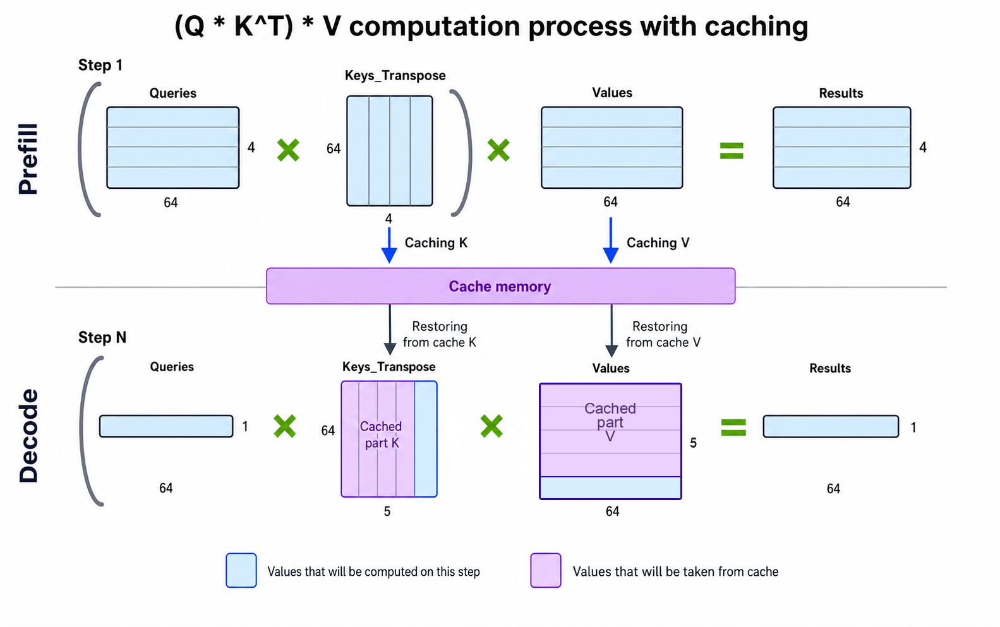
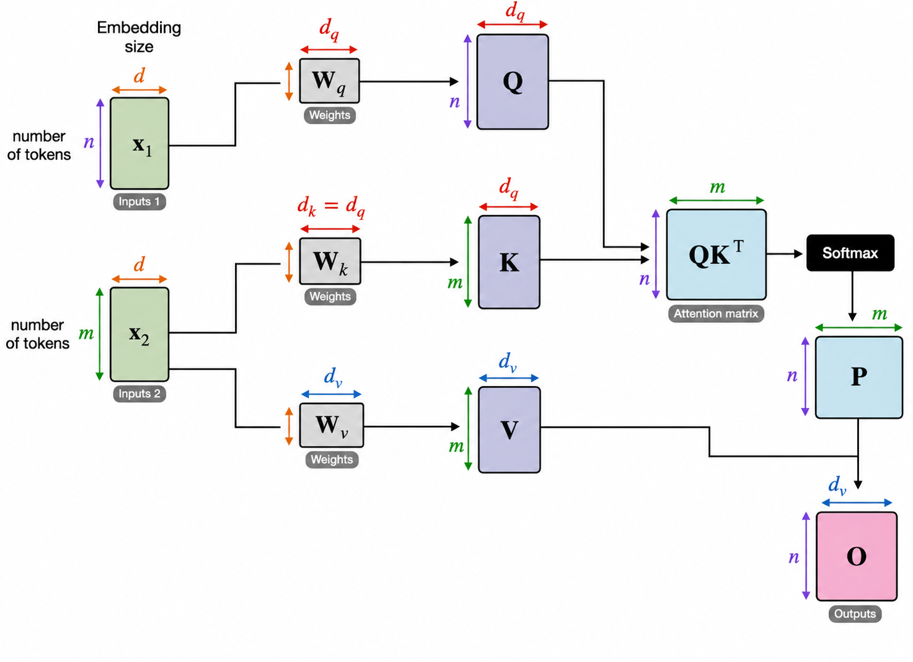
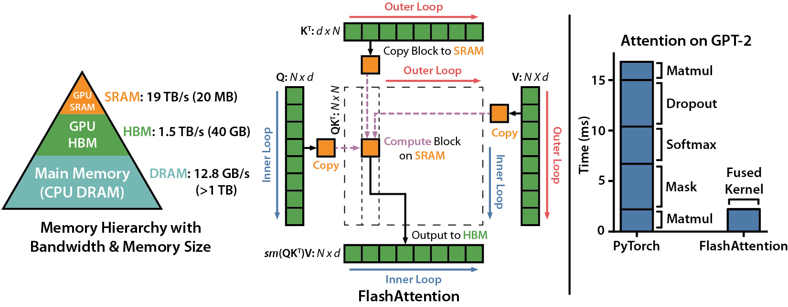
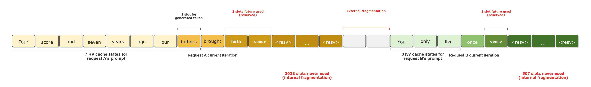
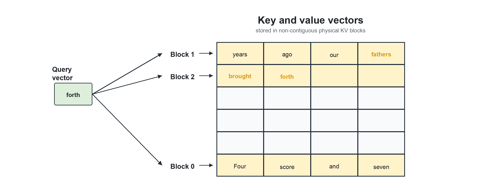

介绍
这里把 GPU 的骨架、精度的边界和算子的呼吸放在一起，慢慢看清它们怎样把计算推得更远。
数据精度格式
本页面系统整理 AI 训练、推理、HPC 和工程选型场景中的各种数据精度格式，帮助您理解它们的差异、联系、应用场景和硬件支持情况。
核心概念
位宽 (Bit Width)
表示数据的总位数，决定了存储和带宽需求。常见的有 4、8、16、32、64 位。
精度 (Precision)
表示数据能够表示的最小差异，由尾数位数决定。精度越高，数值越细腻。
动态范围 (Dynamic Range)
表示能够表示的最大值和最小值之间的范围，由指数位数决定。
混合精度 (Mixed Precision)
在训练或推理中同时使用多种精度格式，平衡性能、内存和精度需求。
指数位 (Exponent)
决定数值的动态范围。指数位越多，能表示的最大值和最小值范围越大。
尾数位 (Mantissa)
决定数值的精度。尾数位越多，能表示的数值越精细。
量化 (Quantization)
将高精度数值映射到低精度格式的过程，通常用于模型压缩和加速推理。
IEEE 754
国际标准浮点数格式规范，定义了 FP16、FP32、FP64 等标准格式。
格式详情
硬件支持
| 格式 | NVIDIA Volta | NVIDIA Turing | NVIDIA Ampere | NVIDIA Hopper | NVIDIA Blackwell | AMD CDNA 2 | AMD CDNA 3 | Intel Xe | Intel Gaudi | Google TPU v3 | Google TPU v4 | Google TPU v5e | Google TPU v5p | 华为 昇腾 910 | 华为 昇腾 910B | 华为 昇腾 910C |
|---|---|---|---|---|---|---|---|---|---|---|---|---|---|---|---|---|
| FP64 | ||||||||||||||||
| FP32 | ||||||||||||||||
| TF32 | ||||||||||||||||
| BF16 | ||||||||||||||||
| FP16 | ||||||||||||||||
| FP8 E4M3 | ||||||||||||||||
| FP8 E5M2 | ||||||||||||||||
| INT8 | ||||||||||||||||
| INT4 |
Fused FP8 4-Way Dot Product
这篇论文提出了两种 FP8 融合 4 路点积微架构，支持缩放因子和 FP32 累加，全程只做一次舍入，在面积和功耗上做了精细权衡。
为什么需要 FP8 点积
GEMM 是瓶颈
AI 训练和推理中，矩阵乘法 (GEMM) 占据绝大部分计算量，其核心就是大量的点积运算。
FP8 是趋势
从 FP32 → FP16/BF16 → FP8，精度逐步降低但吞吐翻倍。FP8 已在 H100 等硬件上获得原生支持。
融合 = 更精确
融合操作将乘法和累加合并，中间不做舍入，只在最终结果做一次舍入，误差显著降低。
缩放因子不可少
FP8 动态范围有限，需要 scaling factor 调整数值范围，论文支持 7-bit 缩放因子。
核心思路
输入与输出
- op1, op2: 两个 32-bit 操作数，各含 4 个 FP8 值
- acc: FP32 累加器
- sf: 7-bit 缩放因子
- FP32 结果 = rnd(2-sf × SoP + acc)
- 其中 SoP = Σ op1[i] × op2[i]
中间格式统一
E4M3 和 E5M2 先统一转换为 9-bit 中间格式（5 位指数 + 3 位尾数，excess-15 偏置），再进入后续计算。E5M2 只需末位补 0，E4M3 需要指数扩展加 8。
两种微架构
设计 A: Late Accumulation (LA)
复用 FP32 加法器
适合高性能 CPU，增量成本低（只增加 SoP 逻辑 572 sq.μm + 改造 FADD32 561 sq.μm）
设计 B: Early Accumulation (EA)
独立数据通路
适合专用加速器，总面积更小（674 vs 1133），但无法复用为通用 FP32 加法器
关键设计技巧
避免对齐移位
传统点积需要把每个乘积对齐到最大指数，代价是多个减法器 + 移位器。LA 用最大乘积指数、EA 用 Anchor 作为参考点，避免了逐个对齐。
Anchor 机制 (EA)
anchor = max(P_exp) + ceil(log2(N)) + 1。所有乘积都右移到 Anchor 位置对齐，累加器也只需一个双向移位器。
单次舍入
中间结果全部保持完整精度（68-bit 或 94-bit 宽），只在最终写回 FP32 时做一次 RNE 舍入，误差最小。
可扩展为 DOT2 × 2
两种设计都可以直接扩展为 2 个并行的 2-way 点积 + FP16 累加，只需复制部分逻辑。
综合结果对比
| 指标 | LA (Late Acc.) | EA (Early Acc.) | FADD32 (参考) |
|---|---|---|---|
| 面积 (sq.μm) | 1133 | 674 | 404 |
| 寄存器数 | 345 | 434 | N/A |
| 增量面积 | 572 (SoP 逻辑) | 674 (整体) | - |
| 流水级 | 4 cycles | 4 cycles | 2 cycles |
| 工艺 / 频率 | 5nm / 3.6GHz | 5nm / 3.6GHz | 5nm / 3.6GHz |
| FP32 加法器复用 | 可以 | 不可以 | - |
| 适用场景 | 高性能 CPU | 专用加速器 | - |
总结
LA 设计适合已有高性能 FP32 加法器的 CPU 数据通路，只需增加 SoP 前端逻辑，增量面积小。EA 设计面积更紧凑，适合专用 AI 加速器中作为独立 DOT4 单元部署。两者都支持 E4M3/E5M2 双格式、7-bit 缩放因子、FP32 累加，可扩展到 2-way 和 n-way 点积。
Lutz et al., "Fused FP8 4-Way Dot Product With Scaling and FP32 Accumulation," IEEE 31st Symposium on Computer Arithmetic (ARITH), 2024. DOI: 10.1109/ARITH61463.2024.00016
微架构发展与比较
Nvidia GPGPU 微架构演进
| uArch | Year | Core | SM(X/M) | GPC | TPC | INT32+FP32 | INT32/FP32 | INT32 | FP32 | FP64 | Warp. | Disp. | LD/ST | SFU | Tens.Core |
|---|---|---|---|---|---|---|---|---|---|---|---|---|---|---|---|
| Fermi | 2010 | GF100 | 16 | 4 | - | 32 | - | - | - | - | 2 | 2 | 16 | 4 | - |
| Kepler | 2012 | GK210 | 15 | - | - | 192 | - | - | - | 64 | 4 | 8 | 32 | 32 | - |
| Maxwell | 2014 | GM204 | 16 | 4 | - | 128 | - | - | - | - | 4 | 8 | 32 | 32 | - |
| Pascal | 2016 | GP100 | 60 | 6 | 5 | 64 | - | - | - | 32 | 2 | 4 | 16 | 16 | - |
| Volta | 2017 | GV100 | 84 | 6 | 7 | - | - | 64 | 64 | 32 | 4 | 4 | 32 | 16 | 8 (1th) |
| Turing | 2018 | TU102 | 72 | 6 | 6 | - | - | 64 | 64 | 2 | 4 | 4 | 16 | 16 | 8 (2th) |
| Ampere | 2020 | GA100 | 128 | 8 | 8 | - | - | 64 | 64 | 32 | 4 | 4 | 32 | 16 | 4 (3th) |
| Ampere | 2020 | GA102 | 84 | 7 | 6 | - | 64 | - | 64 | 2 | 4 | 4 | 16 | 16 | 4 (3th) |
| Ada | 2022 | AD102 | 144 | 12 | 6 | - | 64 | - | 64 | 2 | 4 | 4 | 16 | 16 | 4 (4th) |
| Hopper | 2022 | GH100 | 144 | 8 | 9 | - | - | 64 | 128 | 64 | 4 | 4 | 32 | 16 | 4 (4th) |
| Blackwell | 2024 | - | - | - | - | - | - | - | - | - | - | - | - | - | 4 (5th) |
| Rubin | 2026 | - | - | - | - | - | - | - | - | - | - | - | - | - | Enhanced 5th |
Nvidia 微架构存储层次发展
| uArch | Year | Core | Reg/File | Shared Mem | L1$ | L2$ | SMEM+L1 Config | Cache Strategy | Memory Interface |
|---|---|---|---|---|---|---|---|---|---|
| Tesla | 2006 | G80 | 8KB | 16KB | - | - | - | - | GDDR3 |
| Fermi | 2010 | GF100 | 32KB | 48KB | 16KB | 768KB | Configurable | Write-Back | GDDR5 |
| Kepler | 2012 | GK110 | 64KB | 64KB | 64KB | 1.5MB | Configurable | Write-Back | GDDR5 |
| Maxwell | 2014 | GM204 | 64KB | 96KB | 32KB | 2MB | Fixed Split | Write-Through | GDDR5 |
| Pascal | 2016 | GP102 | 64KB | 64/96KB | 32KB | 2MB | Fixed Split | Write-Through | GDDR5X |
| Volta | 2017 | GV100 | 64KB | 96KB | 128KB | 6MB | Fixed Split | Write-Through | HBM2 |
| Turing | 2018 | TU102 | 64KB | 64KB | 4KB | 5.5MB | Fixed Split | Write-Through | GDDR6 |
| Ampere | 2020 | GA102 | 64KB | 164KB | - | 40MB | 128KB Shared | - | GDDR6X/HBM2e |
| Ada | 2022 | AD102 | 64KB | 99KB | - | 50MB | 128KB Shared | - | GDDR6X |
| Hopper | 2022 | GH100 | 64KB | 256KB | - | 50MB | 256KB Shared | - | HBM3 |
| Blackwell | 2024 | GB200 | 64KB | 228KB | - | 140MB | 228KB Shared | - | HBM3e |
| Rubin | 2026 | TBD | TBD | TBD | - | TBD | TBD | - | HBM4 |
注： Shared Memory / L1 Cache 大小在不同架构中有不同的配置策略。存储层次结构说明：
- Register File (寄存器文件): 每个 SM 内部的高速存储，供线程使用
- Shared Memory (共享内存): 每个 SM 内部，供该 SM 内所有线程块共享
- L1$ (L1缓存): 每个 SM 级别的缓存
- L2$ (L2缓存): 芯片全局缓存，所有 SM 共享
- Memory Interface (内存接口): 连接到外部 GDDR/HBM 内存
Fermi
目录
Fermi
2010 首个完整 GPU 计算架构- Fermi 是 NVIDIA 第一个面向通用计算设计的完整架构。每个 SM 包含 32 个 CUDA Core，分布在 2 条 lane 上（每条 16 个）。
- Fermi 架构把 Tesla 架构的 TPC 改名为 Graphics Processor Clusters（GPC），毕竟 Texture 现在显得不再那么重要。
- Fermi 的 CUDA core 实现了浮点乘加融合（FMA），每个 CUDA Core 内部是 1 个单精度浮点单元 (FPU) + 1 个整数单元 (ALU)，可以直接执行 FMA 操作。每个 cycle 可跑 16 个双精度 FMA。Tesla 的浮点并没有完全按照 IEEE754 标准实现，例如不支持 subnormal 浮点，而 Fermi 实现了完整的支持，并且实现了 IEEE754 标准的 rounding mode。
- Fermi 架构把 Load/Store（LD/ST）单元独立出来，地址空间也从 32 位扩大到了 64 位。寄存器堆保存了 32768 个 32 位寄存器。

Fermi 规模+存储层次
- Fermi 架构引入了 L1 和 L2 数据缓存。
- Fermi 架构的 Shared Memory 和 L1 数据缓存大小是可配置的，二者共享 64 KB 的空间，可以选择 48KB Shared Memory 加 16KB 的 L1 数据缓存，也可以选择 16KB Shared Memory 和 48KB 的 L1 数据缓存。
- Fermi 架构的 L2 缓存采用的是 写回（write-back） 策略。
Kepler
Kepler
2012 SMX FP64
- Kepler 去掉了 TPC/GPC 这一个层级，而是把 SM 做的很大，称为 SMX。相比 Fermi 大幅堆料：CUDA Core 从 32 暴增到 192（4 × 3 × 16，每条 lane 仍是 16 个）。
- Kepler 引入 独立的 64 个双精度运算单元，不需要通过单精度单元去做双精度运算。这使得 Kepler 的双精度性能远超前后几代。4 个 Warp Scheduler 搭配 8 个 Dispatch Unit（1:2 比例）。
- Kepler 相比 Fermi 架构的主要改进：
- Dynamic Parallelism 和 Grid Management Unit：不仅 CPU 可以提交任务到 GPU 执行，GPU 自己也可以提交任务到自己上去执行
- Hyper-Q：允许多个 CPU 核心同时向 GPU 提交任务，把硬件任务队列从 1 增加到了 32 个。每个 CUDA stream 会对应到一个硬件任务队列，因此增加硬件任务队列，可以减少 false dependency。
- GPUDirect：支持 RDMA

Kepler 规模+存储层次 (GK210)
- Kepler 引入了一个额外的 48KB 只读 Data Cache，用于保存只读的数据，可以提供相比 Shared/L1 cache 更高的性能。
- 根据 Dissecting the NVIDIA Volta GPU Architecture via Microbenchmarking，Kepler 架构每个周期每个 SM 可以读取 256 字节的数据，也就是说，每个 LD/ST unit 每周期可以读取 4 字节的数据。
Maxwell
Maxwell
2014 SMM 能效比优先
- 虽然 Kepler 把 GPC 层次去掉了，但是 Maxwell 架构又把 GPC 加回来了。
- SM 更名为 SMM。开始做减法：移除独立双精度计算单元，CUDA Core 从 192 精简到 128（4 × 32）。
- Maxwell 把计算单元也划分成了四份，每一份叫做一个 Processing Block（PB），每个 Block 有独立的 Warp Scheduler、Instruction Buffer 和 Register File。
- 工艺提升带来的收益：每个 CUDA Core 性能比 Kepler 提升 1.4x，整体能效比提升 2x。

Maxwell 规模+存储层次 (gm204，最大规模芯片 gm200 无官方文档)
- Maxwell 架构的 L1 缓存和 Shared Memory 不再共享，Shared Memory 独占 96KB，然后 L1 缓存和 Texture 缓存共享空间。
- 根据 Dissecting the NVIDIA Volta GPU Architecture via Microbenchmarking，Maxwell 架构每个周期每个 SM 可以读取 256 字节的数据，也就是说，每个 LD/ST unit 每周期可以读取 4 字节的数据。
Pascal
Pascal
2016 FP16 NVLink
- Pascal 架构每个 SM 只有 2 个 PB。
- NVLink：首次引入 GPU 间高速互联 NVLink 1.0，双向带宽 160 GB/s
- SM 内部进一步精简：2 × 32 = 64 CUDA Core，Warp Scheduler 也缩减为 2 个。
- 双精度回归：32 个独立 FP64 单元（2 × 16）
- FP16 支持：CUDA Core 首次支持半精度计算，为后续 AI 加速铺路
- 支持 Compute Preemption，使得 kernel 可以在指令级别做抢占，而不是 thread block 级别，这样就可以让调试器等交互式的任务不会阻碍其他计算任务的进行；在 Kepler 架构中，只有等一个 thread block 的所有 thread 完成，硬件才可以做上下文切换，但是如果中间遇到了调试器的断点，这时候 thread block 并没有完成，那么此时只有调试器可以使用 GPU，其他任务就无法在 GPGPU 上执行

Pascal 规模+存储层次 (GP100)
- 支持 Unified Memory，使得 CPU 和 GPU 可以共享虚拟地址空间，让数据自动进行迁移。
- 8 个 512 位的内存控制器，每个内存控制器附带 512 KB L2 缓存，总共有 4096 KB 的 L2 缓存。
- 每两个内存控制器为一组，连接到 4 个 1024 位的 HBM2 内存。
- Pascal 架构每个 SM 有 64 KB 的 Shared memory，并且 SM 的数量比 Maxwell 的两倍还要多，因此实际上是在变相地增加 Shared memory 的数量、容量以及带宽。
- 根据 Dissecting the NVIDIA Volta GPU Architecture via Microbenchmarking，Pascal 架构每个周期每个 SM 可以读取 128 字节的数据，也就是说，每个 LD/ST unit 每周期可以读取 8 字节的数据。
Pascal SM 微架构图

Pascal References
Volta
目录
Volta
2017 V100 Tensor Core 诞生
- 里程碑架构。
- Tensor Core 1.0：首次把矩阵乘累加做成独立硬件单元，成为后续 AI 加速路线的起点。
- NVLink 2.0
- CUDA Core 拆分：不再是统一的 FPU+ALU，而是独立的 FP32 Core 和 INT32 Core。优势：两者可以同时执行，混合运算吞吐翻倍。
- 独立线程调度：每个线程拥有独立 PC 和调用栈
- Warp Scheduler 变为 1:1 对应 Dispatch Unit（之前是 1:2），并增加 L0 ICache。
- 每个 SM 拆分成 4 个 PB 回归。
- Volta 的 Warp Scheduler 又回到了单发射，一条涉及 32 条线程的指令被发射，那么它需要两个周期来完成，第二个周期的时候，Warp Scheduler 也会同时发射其他指令，从而实现指令级并行。

Volta Tensor Core 小结


第 1 代 Tensor Core 与 4x4x4 MMA
- 代际定位：第 1 代 Tensor Core，首次在 NVIDIA GPU 中加入专用矩阵乘累加硬件。
- SM 组织：每个 SM 8 个 Tensor Core，分布在 4 个 Processing Block 中，每个 Block 2 个。
- 计算形态：单个 Tensor Core 每周期执行一个 4×4×4 MMA，完成
D = A × B + C。 - 数据类型：A/B 输入为 FP16；C/D 累加和输出可使用 FP16 或 FP32。
- 等效吞吐：每个 Tensor Core 每周期约等效 64 个 FP32 FMA，8 个 Tensor Core 合计 1024 FLOP/SM/周期。
- 软件接口：CUDA 9 通过 WMMA 暴露 warp-level matrix operation，程序侧通常以 16×16 tile 组织 32 线程协作。
- 核心意义：Volta 把深度学习中的 GEMM 从 CUDA Core 标量路径中抽离出来，后续几代的低精度、稀疏和 Transformer Engine 都沿着这条路线演进。
通俗地说，传统 CUDA Core 更像一排“标量工人”，每个工人一次处理一个乘法或加法；Tensor Core 则像一个小型矩阵计算器，一次接收一小块矩阵，直接完成矩阵乘加。深度学习里的卷积、全连接层和注意力投影最后大多会落到 GEMM，因此把这类计算从通用 CUDA Core 中拿出来做专用硬件，是 Volta 相比 Pascal 的关键转折。
FP16 输入与 FP32 累加
Volta 的第一代 Tensor Core 选择了一个很实用的折中：输入和存储用 FP16，减少显存占用和带宽压力；累加用 FP32，避免训练时误差快速放大。对训练来说，这比“全程 FP16”稳，也比“全程 FP32”快。V100 的 FP16 Tensor Core 峰值达到 125 TFLOPS，已经把 AI 训练吞吐推到 Pascal 时代很难靠堆 CUDA Core 达到的量级。
4x4x4 MMA 执行流程
下面这个伪代码表达的是单个 Tensor Core 在概念上的 4×4×4 矩阵乘累加过程。真实硬件不会按三层 for 循环逐条执行，但这个写法能看清 FP16 输入和 FP32 累加的关系。
// Volta Tensor Core 执行流程（概念示意）。
// 真实 Tensor Core 会在硬件里并行完成这组矩阵乘加，这里用三层循环拆开，
// 目的是说明 4x4x4 MMA 里每个输出元素 D[i][j] 的来源。
for (int i = 0; i < 4; i++) {
// i 表示输出矩阵 D 的行，同时对应 A 矩阵被读取的行。
for (int j = 0; j < 4; j++) {
// j 表示输出矩阵 D 的列，同时对应 B 矩阵被读取的列。
// C[i][j] 是本轮 MMA 的初始累加值；Volta 训练场景通常使用 FP32 accumulator，
// 这样可以在 FP16 输入带来高吞吐的同时，减少累加误差。
float sum = C[i][j];
for (int k = 0; k < 4; k++) {
// k 是点积维度：A 的第 i 行和 B 的第 j 列逐项相乘。
// A/B 原始输入是 FP16；乘法结果参与 FP32 累加，等价于 D = A * B + C。
sum += (float)A[i][k] * (float)B[k][j];
}
// 单个输出元素计算完成后写回 D。
// 真实硬件会一次性并行产出整个 4x4 tile，而不是逐元素循环写回。
D[i][j] = sum;
}
}WMMA 编程接口
不过 Volta 时代的软件生态还没有后来那么自动化。开发者通常需要通过 cuBLAS/cuDNN 的 Tensor Core kernel，或者直接用 WMMA API，主动把矩阵尺寸、数据类型和内存布局整理成 Tensor Core 友好的形式。后来的 AMP、TF32 和 Transformer Engine，本质上都是在降低这部分使用门槛。
Volta 对开发者最重要的变化是 WMMA API。它把一个 warp 协作完成的矩阵乘累加抽象成 fragment，开发者只需要描述 A、B、Accumulator 的 tile 形状、类型和布局。
// WMMA 是 CUDA 对 Tensor Core 的 warp 级抽象，头文件里定义了 fragment、
// load_matrix_sync、mma_sync 等接口。
#include <mma.h>
// nvcuda 命名空间下的 wmma 子命名空间提供矩阵片段类型和 MMA 操作。
using namespace nvcuda;
// A 矩阵片段：一个 warp 协作处理 16x16x16 tile 中的 matrix_a。
// half 表示输入元素是 FP16，row_major 表示 A 按行主序读取。
wmma::fragment<wmma::matrix_a, 16, 16, 16, half, wmma::row_major> a_frag;
// B 矩阵片段：同样是 FP16，但这里用 col_major，便于表达常见 GEMM 中 B 的布局。
wmma::fragment<wmma::matrix_b, 16, 16, 16, half, wmma::col_major> b_frag;
// accumulator 片段：保存 16x16 输出 tile 的累加结果，类型是 FP32。
// FP32 accumulator 是混合精度训练保持稳定性的关键。
wmma::fragment<wmma::accumulator, 16, 16, 16, float> c_frag;
// 把输出 tile 的累加器清零，等价于 C tile 初始值为 0。
wmma::fill_fragment(c_frag, 0.0f);
// 从内存中加载 A/B tile 到 warp 内部的 fragment。
// lda/ldb 是 leading dimension，用于告诉 WMMA 每一行或每一列在内存中的跨度。
wmma::load_matrix_sync(a_frag, a_tile, lda);
wmma::load_matrix_sync(b_frag, b_tile, ldb);
// 执行一次 16x16x16 矩阵乘累加：c_frag = a_frag * b_frag + c_frag。
// 这个调用会映射到底层 Tensor Core 指令。
wmma::mma_sync(c_frag, a_frag, b_frag, c_frag);
// 把 accumulator fragment 写回输出矩阵 C。
// wmma::mem_row_major 表示输出 tile 按行主序落到内存。
wmma::store_matrix_sync(c_tile, c_frag, ldc, wmma::mem_row_major);完整 kernel 会在 K 维上循环加载 tile，并把多个 mma_sync 累加到同一个 accumulator fragment：
// 一个极简 HGEMM WMMA kernel：A/B 是 FP16，C 是 FP32。
// 示例重点是展示 K 维循环累加，不包含边界检查、shared memory 优化和高性能调度。
__global__ void hgemm_wmma_kernel(
const half* A, const half* B, float* C,
int M, int N, int K
) {
// 每个 warp 维护当前 16x16 输出 tile 所需的 A、B、C 片段。
wmma::fragment<wmma::matrix_a, 16, 16, 16, half, wmma::row_major> a_frag;
wmma::fragment<wmma::matrix_b, 16, 16, 16, half, wmma::col_major> b_frag;
wmma::fragment<wmma::accumulator, 16, 16, 16, float> c_frag;
// 计算当前 warp 负责输出矩阵中的哪个 16x16 tile。
// warp_m 对应输出 tile 的行方向索引，warp_n 对应列方向索引。
int warp_m = (blockIdx.y * blockDim.y + threadIdx.y) / 16;
int warp_n = (blockIdx.x * blockDim.x + threadIdx.x) / 16;
// 初始化 accumulator。真实 GEMM 如果有 beta * C，也可以先加载已有 C tile。
wmma::fill_fragment(c_frag, 0.0f);
// 沿 K 维每次推进 16 个元素，对同一个输出 tile 持续累加。
for (int k = 0; k < K; k += 16) {
// 加载 A 的 16x16 tile：起点位于第 warp_m 个输出行块、第 k 个 K 块。
wmma::load_matrix_sync(a_frag, A + warp_m * 16 * K + k, K);
// 加载 B 的 16x16 tile：起点位于第 k 个 K 块、第 warp_n 个输出列块。
wmma::load_matrix_sync(b_frag, B + k * N + warp_n * 16, N);
// 当前 K tile 的乘积累加到 c_frag。
wmma::mma_sync(c_frag, a_frag, b_frag, c_frag);
}
// K 维全部累加完成后，把 16x16 输出 tile 写回全局内存。
wmma::store_matrix_sync(C + warp_m * 16 * N + warp_n * 16,
c_frag, N, wmma::mem_row_major);
}- WMMA 的好处是可读性和跨架构可移植性好，适合从 CUDA Core GEMM 迁移到 Tensor Core。
- 局限是调度、寄存器分配、shared memory layout 的控制不够细，后续极致性能优化会转向 MMA/PTX 或 CUTLASS。
- Volta 时代的优化重点是让 M/N/K tile 对齐 16，减少 shared memory bank conflict，并用 FP32 accumulator 控住数值误差。
Volta 规模+存储层次 (GV100)
- 在 Volta 架构中，L1 Data Cache 和 Shared memory 再次共享。
- 引入了 L0 Instruction Cache，每个 Processing Block 内部都有一个。
- 8 个 512 位的内存控制器。
- 根据 Dissecting the NVIDIA Volta GPU Architecture via Microbenchmarking，Volta 架构每个周期每个 SM 可以读取 256 字节的数据，也就是说，每个 LD/ST unit 每周期可以读取8 字节的数据。
- 根据 gpu-benches 实测，每个 SM 每周期只能读取不到 128 字节（14 TB/s，80 个 SM，时钟频率 1530 MHz，每个 SM 每周期读取 114 字节）的数据（V100不是完整GV100核心，拥有 80 个 SM）。
- 6144 KB 的 L2 缓存
- 分为 64 个 L2 slice，每个 slice 是 96 KB 的大小。
- 每个 slice 每周期可以读取 32 B 的数据，因此整个 L2 缓存的读带宽是 2048 字节每周期。
- L2 缓存工作在和 SM 同一个频率下，按 1530 MHz 频率来算，L2 缓存带宽是 3.133 TB/s，V100 的内存带宽是 0.9 TB/s，每个 SM 每个周期可以分到的 L2 带宽是 25.6 字节。
Volta SIMT 改进：独立线程调度


Pascal 及之前，一个 Warp 遇到分支时两侧只能串行执行。Volta 将 PC 和调用栈设计为每个线程独立，分支内的指令可以在更细的粒度上混合调度，并支持 __syncwarp() 显式同步。
Turing
目录
Turing
2018 RTX 20 系列 RT Core
- Tensor Core 2.0：在 Volta 基础上新增低精度整数路径，开始覆盖推理量化场景。
- 引入 RT Core（光线追踪加速单元）。
- SM 内计算单元与 Volta 类似，每个 SM 含 4 个 Processing Block。

Turing Tensor Core 小结
第 2 代 Tensor Core 与推理扩展
- 代际定位：第 2 代 Tensor Core，重点从训练扩展到推理。
- SM 组织：每个 SM 仍然是 8 个 Tensor Core，每个 Processing Block 2 个。
- 计算形态：保留 Volta 的 FP16 MMA 路径，同时强化多精度推理吞吐。
- 数据类型：在 FP16 基础上新增 INT8、INT4，并支持二值网络相关的 INT1/Binary 路径。
- 累加类型：FP16 路径可配合 FP16/FP32 累加，整数路径通常面向 INT32 累加。
- 核心收益：INT8 吞吐通常可达到 FP16 的 2 倍，INT4 可进一步提高到 FP16 的 4 倍，适合量化推理。
- 典型落点：T4 和 RTX 20 系列把 Tensor Core 从训练卡扩展到大规模在线推理和消费级 RTX 生态。
INT8/INT4/Binary 量化路径
Turing 开始，Tensor Core 不只是训练加速器，也成了推理部署里的量化执行单元。工程上通常不会手写 INT8 MMA，而是通过 TensorRT 校准或 QAT 后让引擎选择 Tensor Core kernel。
TensorRT 校准与部署
TensorRT C++ 侧的核心是启用 INT8，并挂上校准器：
// TensorRT INT8 推理引擎构建示意。
// Turing 的 Tensor Core 对 INT8/INT4 推理很友好，但前提是引擎知道哪些层可以安全量化。
// 启用 INT8 构建模式，让 TensorRT 在支持的 layer 上选择 INT8 Tensor Core kernel。
builder->setInt8Mode(true);
// 严格类型约束会减少 TensorRT 自动回退或自动插入重排的自由度。
// 实际项目中是否开启要看精度、性能和兼容性需求。
builder->setStrictTypeConstraints(true);
// PTQ（Post-Training Quantization）需要校准器提供有代表性的输入样本。
// TensorRT 会用这些样本估计 activation 的动态范围，生成 INT8 scale。
class Int8Calibrator : public IInt8EntropyCalibrator2 {
public:
bool getBatch(void* bindings[], const char* names[], int nbBindings) override {
// 把一批校准数据从 CPU 拷贝到 GPU 输入绑定。
// bindings[0] 通常对应网络第一个输入 tensor 的 device pointer。
cudaMemcpy(bindings[0], batch_data, batch_bytes, cudaMemcpyHostToDevice);
// 返回 true 表示本次 batch 有效；数据耗尽时返回 false 结束校准。
return true;
}
};
// dataloader 负责持续提供覆盖真实业务分布的校准样本。
Int8Calibrator calibrator(dataloader);
// 把校准器交给 builder config，后续构建 engine 时会执行校准流程。
config->setInt8Calibrator(&calibrator);
// 构建完成后的 engine 会把可量化部分编译成 INT8 路径，不适合量化的层可能保持 FP16/FP32。
ICudaEngine* engine = builder->buildEngineWithConfig(*network, *config);Python 侧更常见，尤其是从 ONNX 模型离线构建 engine：
# TensorRT Python API，用于离线构建推理 engine。
import tensorrt as trt
# logger 控制 TensorRT 构建阶段的日志级别；WARNING 能保留关键告警同时减少噪声。
logger = trt.Logger(trt.Logger.WARNING)
# Builder 负责把网络定义、精度策略和硬件能力编译成可部署的 engine。
builder = trt.Builder(logger)
# EXPLICIT_BATCH 表示 batch 维度显式出现在网络输入 shape 中，
# ONNX 导入场景通常都使用这种模式。
network = builder.create_network(
1 << int(trt.NetworkDefinitionCreationFlag.EXPLICIT_BATCH)
)
# ONNX parser 会把 model.onnx 中的算子图填充到 TensorRT network 里。
parser = trt.OnnxParser(network, logger)
with open("model.onnx", "rb") as f:
# 解析 ONNX 字节流；真实工程里应检查 parser error，避免静默构建失败。
parser.parse(f.read())
# config 用于设置精度、workspace、profile、校准器等构建选项。
config = builder.create_builder_config()
# INT8 打开后，TensorRT 会尝试为支持的层选择 INT8 Tensor Core kernel。
config.set_flag(trt.BuilderFlag.INT8)
# 同时打开 FP16，方便无法安全 INT8 的层回退到 FP16，而不是全部回到 FP32。
config.set_flag(trt.BuilderFlag.FP16)
# calibrator 提供 PTQ 校准数据，帮助 TensorRT 估计每个 tensor 的量化 scale。
config.int8_calibrator = calibrator
# 输出序列化 engine，部署时可直接反序列化加载，避免每次启动重新构建。
serialized_engine = builder.build_serialized_network(network, config)- INT8 推理要关注校准集覆盖度，校准不好时吞吐上去了但精度会掉。
- 矩阵维度仍然需要尽量对齐 Tensor Core tile，尤其是 batch、channel、hidden size 这类维度。
- Turing 的经验是：训练仍以 FP16/FP32 混合精度为主，线上推理优先看 INT8，极限压缩再考虑 INT4/Binary。
Turing 规模+存储层次 (TU102)
- 12 个 32-bit GDDR6 memory controller
- Turing 架构的每 TPC 的 L1 带宽是 Pascal 架构的两倍。
Turing SM 微架构图

Turing References
Ampere (GA100)
目录
Ampere (GA100)
2020 A100 稀疏 Tensor Core
- 4 个 PB。
- Tensor Core 3.0：引入 TF32、BF16、FP64 Tensor Core 和 2:4 结构化稀疏，训练、推理和 HPC 都明显受益。
- NVLink 3.0
- Multi-Instance GPU（多实例 GPU，MIG 1.0）

Ampere (GA100) Tensor Core 小结

第 3 代 Tensor Core 与 GA100 定位
- 代际定位：第 3 代 Tensor Core，A100 的核心升级点是让 Tensor Core 同时覆盖 AI 训练、推理和 HPC。
- SM 组织：每个 SM 的 Tensor Core 从 Volta/Turing 的 8 个减到 4 个，但单个 Tensor Core 内部吞吐约提升 4 倍。
- 总体吞吐：数量减半但单元变强，因此 Dense Tensor Core 总吞吐约为上一代的 2 倍。
TF32/BF16/FP64 数据类型
- 新数据类型：新增 TF32、BF16、FP64 Tensor Core，并继续支持 FP16、INT8、INT4、Binary/INT1。
- TF32 路径：FP32 代码可在不改模型代码的情况下走 Tensor Core，指数范围接近 FP32，尾数精度低于 FP32。
- BF16 路径：保留 FP32 级别动态范围，更适合大模型训练中的梯度和激活范围。
- FP64 路径：GA100 首次把双精度矩阵乘也纳入 Tensor Core，面向科学计算和 HPC。
Ampere 的软件侧变化是“默认 FP32 代码也可能走 Tensor Core”。TF32 保持 FP32 的指数位，降低尾数精度，适合大多数深度学习矩阵乘；如果需要严格数值复现，需要显式关闭或调整 matmul 精度策略。
# PyTorch 的 matmul/conv 会通过 CUDA 后端选择合适的 Tensor Core kernel。
import torch
# Ampere 默认支持 TF32 Tensor Core 路径。
# allow_tf32=True 表示 FP32 矩阵乘可以用 TF32 计算格式执行，通常吞吐更高。
torch.backends.cuda.matmul.allow_tf32 = True
# cuDNN 中的卷积也可以使用 TF32，加速 CNN 或卷积型模块。
torch.backends.cudnn.allow_tf32 = True
# AMP 的 GradScaler 用于动态 loss scaling，避免 FP16/BF16 混合精度训练中梯度下溢。
scaler = torch.cuda.amp.GradScaler()
for x, target in dataloader:
# 清空上一轮梯度；否则 PyTorch 会默认把梯度累加到已有 grad 上。
optimizer.zero_grad()
# autocast 会按算子白名单/黑名单自动选择低精度或 FP32。
# 这里使用 BF16，适合 Ampere 上需要较大动态范围的训练场景。
with torch.cuda.amp.autocast(dtype=torch.bfloat16):
# 前向传播中的 GEMM、卷积、attention projection 等会优先使用 Tensor Core。
y = model(x)
# loss 计算可能包含归约操作，框架会根据 autocast 策略选择更稳的精度。
loss = criterion(y, target)
# 先缩放 loss 再反向传播，降低低精度梯度过小而被 flush 成 0 的概率。
scaler.scale(loss).backward()
# step 会自动 unscale 梯度，并在检测到溢出时跳过 optimizer 更新。
scaler.step(optimizer)
# 根据本轮是否溢出调整缩放因子，下一轮继续使用新的 scale。
scaler.update()2:4 结构化稀疏
- 稀疏路径：2:4 结构化稀疏要求每连续 4 个权重中 2 个为 0，硬件通过元数据选择非零项，理论上把同精度有效吞吐再提高约 2 倍。
稀疏 Tensor Core 不是通用稀疏矩阵加速器，它吃的是结构化 2:4 权重。典型流程是先训练/剪枝得到满足约束的权重，再压缩为非零值和元数据，让硬件按元数据选择参与点积的 activation。
// Dense 存储：零值也占用存储和计算槽位
float dense_matrix[4][4] = {
// 每行 4 个权重里只有 2 个非零值；这满足 Ampere 2:4 结构化稀疏的基本形态。
{1.0, 0.0, 0.0, 2.0},
{0.0, 3.0, 0.0, 0.0},
{0.0, 0.0, 4.0, 0.0},
{5.0, 0.0, 0.0, 6.0},
};
// Sparse 存储：只保留非零值和位置索引
struct SparseMatrix {
// values 保存实际参与乘法的非零权重，避免把 0 也参与搬运和计算。
float values[8];
// indices 记录每个非零值在原始矩阵中的位置。
// 注意：这只是通用稀疏的概念表示，不等同于 Ampere Sparse Tensor Core 的硬件压缩格式。
uint2_t indices[8];
};// 2:4 结构化稀疏的概念存储：值减半，再附带位置元数据
struct Sparse2to4Tile {
// 原来 16 个权重被分成 4 组，每组 4 个；每组只保留 2 个非零值，所以总共 8 个值。
half values[8];
// metadata 记录每组 4 个权重中哪 2 个位置非零。
// Sparse Tensor Core 会根据这些元数据选择 activation，与 values 做点积。
uint8_t metadata[4];
};普通稀疏 WMMA kernel 可以作为理解材料，但它不等同于 Ampere Sparse Tensor Core 的 2:4 硬件路径。真正的 Sparse Tensor Core 需要满足固定 2:4 模式，并使用硬件认可的压缩布局。
// 普通稀疏 GEMM 的 WMMA 写法示意。
// 它用来帮助理解“稀疏值 + 位置”的计算流程，不代表 Ampere 2:4 Sparse Tensor Core 的真实接口。
__global__ void sparse_gemm_wmma(
const half* A_values,
const int* A_indices,
const half* B_dense,
float* C,
int M, int N, int K, int nnz
) {
// B 仍然按 dense tile 加载；稀疏的是 A 矩阵。
wmma::fragment<wmma::matrix_b, 16, 16, 16, half, wmma::row_major> b_frag;
// C 使用 FP32 accumulator，降低长 K 维累加带来的误差。
wmma::fragment<wmma::accumulator, 16, 16, 16, float> c_frag;
// 初始化输出 tile 的累加器。
wmma::fill_fragment(c_frag, 0.0f);
// 遍历 A 的非零项；真实高性能实现会按 tile/block 组织，而不是逐元素循环。
for (int idx = 0; idx < nnz; idx++) {
// A_indices 以 row/col 成对保存非零值位置。
int row = A_indices[idx * 2];
int col = A_indices[idx * 2 + 1];
// 取出当前非零权重值。
half value = A_values[idx];
// 构造 A 的 fragment。这里每次只填一个非零值，是为了表达概念。
wmma::fragment<wmma::matrix_a, 16, 16, 16, half, wmma::row_major> a_frag;
// 这里需要把稀疏值填回 fragment 对应位置；真实实现还要处理布局和合并访问。
fill_sparse_fragment(a_frag, row, col, value);
// 根据当前非零值所在的 col，加载 B 中对应的 dense tile。
wmma::load_matrix_sync(b_frag, B_dense + col * 16 * N, N);
// 把当前稀疏 A fragment 与 B tile 的乘积累加到 C。
wmma::mma_sync(c_frag, a_frag, b_frag, c_frag);
}
// 所有非零项处理完后写回输出 tile。
wmma::store_matrix_sync(C, c_frag, N, wmma::mem_row_major);
}Kernel 调优与底层 MMA
- 适合场景：大规模 GEMM、卷积 lowering 后的矩阵乘、Transformer MLP/attention projection。
- 不适合场景：稀疏模式无规则、矩阵太小、维度不对齐或 kernel 被访存瓶颈支配。
- 调优检查：M/N/K 对齐 8 或 16，global memory 合并访问，shared memory 避免 bank conflict，用 Nsight Compute 看 tensor pipe 是否真正忙起来。
// 访存优化示意：先把全局内存 tile 搬到 shared memory
// +1 padding 让相邻行的起始地址错开，减少 shared memory bank conflict。
__shared__ half smem_a[16][16 + 1];
// 每个线程搬运 tile 中的一部分元素。
// 全局内存访问尽量连续，便于合并访存；shared memory 则作为 Tensor Core 前的缓存。
smem_a[threadIdx.y][threadIdx.x] =
A[row * K + k + threadIdx.x];
// 等待整个线程块完成搬运，避免后续 WMMA 读取到未写完的 shared memory。
__syncthreads();
// 从 shared memory 加载 A fragment。
// leading dimension 使用 16 + 1，是因为前面为了避开 bank conflict 添加了 padding。
wmma::load_matrix_sync(a_frag, &smem_a[0][0], 16 + 1);双缓冲是 Tensor Core kernel 里隐藏访存延迟的经典套路：一块 shared memory 正在供 Tensor Core 计算，另一块同时准备下一轮 tile。
// 双缓冲 GEMM 概念示例：一个 stage 供 Tensor Core 计算，另一个 stage 预取下一块 tile。
__global__ void gemm_double_buffer(half* A, half* B, float* C,
int M, int N, int K) {
// smem_a/smem_b 的第一维是 2，表示两个缓冲区交替使用。
__shared__ half smem_a[2][16][64];
__shared__ half smem_b[2][64][16];
// stage 指向当前用于计算的 shared memory 缓冲区。
int stage = 0;
// 先预加载第 0 个 K tile，让后面的循环一开始就有数据可算。
load_tile_to_smem(smem_a[0], smem_b[0], A, B, 0);
// 确保预加载完成后再进入计算循环。
__syncthreads();
for (int k = 0; k < K; k += 16) {
// 如果还有下一块 K tile，就把它加载到另一个缓冲区。
// 在真实异步实现里，这一步会和当前 tile 的计算尽量重叠。
if (k + 16 < K) {
load_tile_to_smem(smem_a[stage ^ 1],
smem_b[stage ^ 1],
A, B, k + 16);
}
// 从当前 stage 的 shared memory 中取出 A/B fragment。
wmma::load_matrix_sync(a_frag, smem_a[stage], 64);
wmma::load_matrix_sync(b_frag, smem_b[stage], 16);
// Tensor Core 执行当前 tile 的矩阵乘累加。
wmma::mma_sync(c_frag, a_frag, b_frag, c_frag);
// 等待下一块 tile 加载完成，再切换 stage。
__syncthreads();
// 0 和 1 之间来回切换，达到 ping-pong buffer 的效果。
stage ^= 1;
}
// K 维所有 tile 累加完成后写回输出矩阵。
wmma::store_matrix_sync(C, c_frag, N, wmma::mem_row_major);
}如果 WMMA 的抽象不够用，可以继续往下用 ldmatrix 和 mma.sync 直接控制寄存器片段。这类代码通常出现在 CUTLASS、Triton 或手写高性能 GEMM kernel 的底层。
// 手写 PTX 片段示意：直接操作 Tensor Core 需要的寄存器 fragment。
// 这类代码可读性差，但能精细控制底层指令、寄存器和 shared memory 布局。
uint32_t frag_a[4];
uint32_t frag_b[2];
// C fragment 同时作为输入 accumulator 和输出 accumulator，初始值为 0。
uint32_t frag_c[2] = {0, 0};
// ldmatrix 从 shared memory 以 Tensor Core 需要的布局加载矩阵片段。
// x4 表示一次加载 4 组寄存器，m8n8.x4.shared.b16 表示 16-bit shared memory 矩阵片段。
asm volatile(
"ldmatrix.sync.aligned.x4.m8n8.x4.shared.b16 "
"{ %0, %1, %2, %3 }, [%4];\n"
// 输出操作数：frag_a[0..3] 接收从 shared memory 读出的 A fragment。
: "=r"(frag_a[0]), "=r"(frag_a[1]), "=r"(frag_a[2]), "=r"(frag_a[3])
// 输入操作数：smem_a_ptr 是 shared memory 地址。
: "r"(smem_a_ptr)
);
// mma.sync 触发一次 Tensor Core 矩阵乘累加。
// m16n8k16 表示 tile 形状，row.col 表示 A/B 的逻辑布局，f16.f16.f16.f16 表示输入/输出类型。
asm volatile(
"mma.sync.aligned.m16n8k16.row.col.f16.f16.f16.f16 "
"{ %0, %1 }, { %2, %3, %4, %5 }, { %6, %7 }, { %8, %9 };\n"
// 输出操作数：更新后的 C fragment。
: "=r"(frag_c[0]), "=r"(frag_c[1])
// 输入操作数：A fragment、B fragment，以及旧的 C accumulator。
: "r"(frag_a[0]), "r"(frag_a[1]), "r"(frag_a[2]), "r"(frag_a[3]),
"r"(frag_b[0]), "r"(frag_b[1]),
"r"(frag_c[0]), "r"(frag_c[1])
);# 用 Nsight Compute 检查 Tensor Core 路径是否真的启用
# 统计 tensor pipe 上执行过的指令数量；如果接近 0，说明 kernel 很可能没有走 Tensor Core。
ncu --metrics smsp__inst_executed_pipe_tensor.sum ./my_program
# 观察 tensor pipe 活跃周期占峰值可持续周期的比例，用于判断 Tensor Core 是否成为主要计算路径。
ncu --metrics smsp__pipe_tensor_cycles_active.avg.pct_of_peak_sustained_active ./my_program
# 统计 predicated-on 的 tensor op，辅助确认 MMA 指令没有被谓词大量屏蔽。
ncu --metrics smsp__tensor_op_on_pred.avg ./my_programAmpere (GA100) 规模+存储层次
- 6 个 HBM2 stack，对应 12 个 512-bit memory controller。
- 每个 SM 的 L1 Data Cache/Shared Memory 总量增加到了 192 KB。
- A100 GPU 有 40 MB 的 L2 缓存，分为两个 partition。
- 每个 partition 有 40 个 L2 slice，每个 slice 是 512 KB 的大小。
- 每 8 个 L2 slice 对应一个 memory controller
- 每个 slice 每周期可以读取 64B 的数据，因此整个 L2 缓存的读带宽是 5120 字节每周期
- L2 缓存工作在和 SM 同一个频率下，按 1410 MHz 频率来算，L2 缓存带宽是 7.219 TB/s，A100 的内存带宽是 1.555 TB/s，
- 每个 SM 每个周期可以分到的 L2 带宽是 47.4 字节
- 根据 gpu-benches 实测，每个 SM 每周期只能读取不到 128 字节（19 TB/s，108 个 SM，时钟频率 1410 MHz，每个 SM 每周期读取 125 字节）的数据。
- A100 GPU 有 108 个 SM（不是完整的GA100），一共 432 个 Tensor Core，每个 Tensor Core 每周期可以进行 256 个 FP16 FMA 计算，SM 频率 1410 MHz，因此 A100 的 FP16 Tensor Core 峰值性能是 432 * 256 FLOPS * 2 * 1410 MHz = 312 TFLOPS。
Ampere (GA100) A100 vs V100 性能提升

Ampere (GA102)
目录
Ampere (GA102)
2020 RTX 30
- 4 个 PB。
- 出现了 FP32/INT32 混合的 core，使得 FP32 峰值性能翻倍，但是这个峰值也更难达到，因为达到峰值意味着不用到 FP32/INT32 core 的 INT32 部分。

Ampere (GA102) Tensor Core 小结
消费级 Ampere Tensor Core
- 代际定位：第 3 代 Tensor Core 的消费级 Ampere 版本，服务 RTX 30 系列的训练、推理和图形 AI 功能。
- SM 组织：每个 SM 4 个 Tensor Core，每个 Processing Block 1 个，数量布局与 GA100 相同。
- 数据类型：支持 TF32、BF16、FP16、INT8、INT4、Binary/INT1 等低精度路径，但不包含 GA100 面向 HPC 的 FP64 Tensor Core 路径。
- 稀疏路径：支持 Ampere 的 2:4 结构化稀疏，压缩权重和元数据配合 Sparse Tensor Core 提升有效吞吐。
- 与 GA100 差异：GA102 更偏图形和消费级 AI workload，Tensor Core 能力服务 DLSS、推理和混合精度训练；GA100 则额外强化 FP64、MIG 和数据中心特性。
- 性能特点：TF32 让 FP32 矩阵乘更容易吃到 Tensor Core，FP16/BF16/INT8 则覆盖深度学习训练和推理的主流精度。
TF32/FP16 AMP 训练路径
在 RTX 30 上做模型训练或本地推理时，最常见的收益来自 TF32、FP16 AMP 和 INT8 推理，而不是 GA100 的 FP64 Tensor Core。
# PyTorch 负责调用 CUDA/cuDNN/cuBLAS，底层会按精度策略选择 Tensor Core kernel。
import torch
# 这里用 CrossEntropyLoss 做分类训练示例。
import torch.nn as nn
# GA102 支持 TF32 Tensor Core。这个设置允许 FP32 matmul 在可接受误差下走 TF32 路径，
# 对很多深度学习训练来说，能在几乎不改模型代码的情况下提升吞吐。
torch.set_float32_matmul_precision("high")
# GradScaler 用于混合精度训练时动态放大 loss，避免 FP16 梯度过小而下溢为 0。
scaler = torch.cuda.amp.GradScaler()
for images, labels in train_loader:
# 每个 iteration 开始前清空上一轮梯度，避免梯度跨 batch 累加。
optimizer.zero_grad()
# autocast 会把适合低精度的算子自动切到 FP16，
# 矩阵乘、卷积等密集计算因此更容易使用 Tensor Core。
with torch.autocast(device_type="cuda", dtype=torch.float16):
# 前向传播：模型内部的 GEMM/Conv 是 Tensor Core 最主要的加速来源。
logits = model(images)
# loss 通常会在 autocast 策略下选择合适精度，避免关键归约过度损失精度。
loss = nn.CrossEntropyLoss()(logits, labels)
# scale(loss) 先放大 loss 再反向传播，减少 FP16 梯度下溢风险。
scaler.scale(loss).backward()
# step 会在内部先 unscale 梯度，并在检测到 inf/nan 时跳过本次参数更新。
scaler.step(optimizer)
# 根据本轮是否溢出动态调整缩放因子。
scaler.update()推理与图形 AI
- 训练侧：FP16 AMP 通常比纯 FP32 更省显存，但要配合 GradScaler 避免梯度下溢。
- 推理侧：TensorRT FP16/INT8 更容易吃满 Tensor Core；小 batch、短序列时反而可能被 launch overhead 和访存拖住。
- 图形侧：DLSS 这类神经网络渲染 workload 会直接利用 Tensor Core，但这部分由驱动和 SDK 封装，应用开发者通常不直接写 MMA。
Ampere (GA102) 规模+存储层次
- 12 个 32-bit memory controller，一共 384 位。
- 12 组 512KB 的 L2 缓存，每组对应一个内存控制器，L2 一共是 6144 KB。
- GA102 的 shared memory 带宽是每个 SM 每个时钟 128 字节，而 Turing 架构的这个值是 64。
- GeForce RTX 3080 (GA102) 的每 SM L1 带宽是 219 GB/s（一个 SM 有 16 个 LD/ST unit，每个 LD/ST unit 每个周期读取 8B 的数据，所以带宽是 219 GB/s）。
- GeForce RTX 2080 Super (TU104) 的每 SM L1 带宽是 116 GB/s（每个 SM 有 16 个 LD/ST unit，每个 LD/ST unit 每个周期读取 4B 的数据，带宽是 116 GB/s）。
Ampere (GA102) SM 微架构图

Ampere (GA102) References
Ada Lovelace
目录
Ada Lovelace
2022 RTX 40 系列 FP8 / DLSS 3
消费级旗舰。延续 Ampere 的双数据通路（64 专用 FP32 + 64 Flex FP32/INT32），合计 128 FP32 Core。TSMC 4N 工艺。
- Tensor Core 4.0：新增 FP8 路径，并通过 Transformer Engine 软件栈服务生成式 AI 和推理场景。
- 第 3 代 RT Core：新增 Opacity Micro-Map（OMM）和 Displaced Micro-Mesh Engine，光追性能 2x。
- 支持 DLSS 3（帧生成）、Shader Execution Reordering（SER，光追调度优化）。
- AD102：144 SM。
- RTX 4090：128 SM。

Ada Lovelace Tensor Core 小结
Ada Tensor Core 定位
- 代际定位：第 4 代 Tensor Core 的 Ada 版本，重点面向消费级 RTX、创作、推理和 DLSS 工作负载。
- SM 组织：每个 SM 4 个 Tensor Core，延续 Ampere 的每 Processing Block 1 个布局。
- 新数据类型：在 FP16、BF16、TF32、INT8、INT4 之外，架构层面新增 FP8 路径。
- FP8 格式：E4M3 更偏激活/权重，E5M2 动态范围更大，更适合梯度或范围更宽的数据。
- Transformer Engine：软件栈可在 Hopper、Ada、Blackwell 上使用 FP8，按层选择合适精度以降低显存和带宽压力。
- 与 Hopper 区别：Ada 更偏图形和边缘/工作站推理，不强调 Hopper 的 wgmma、TMA、Thread Block Cluster 等数据中心协作机制。
- 典型场景：DLSS、生成式 AI 推理、低精度矩阵乘和创作应用中的神经网络加速。
FP8 与 Transformer Engine
Ada 的 FP8 更适合被框架或推理引擎托管，而不是在应用里手动管理每个 tensor 的缩放。工程上要重点观察显存带宽、KV cache 和 batch/sequence shape，而不是只看标称 TFLOPS。
生成式 AI 推理路径
# PyTorch 会把高层算子调度到 CUDA/cuDNN/cuBLAS 等后端。
import torch
# 允许 FP32 matmul 使用 Tensor Core 友好的 TF32 路径。
# Ada 上训练/推理常常无需手写 MMA，只要框架和 kernel 支持就能触发 Tensor Core。
torch.set_float32_matmul_precision("high")
# 推理阶段用 autocast 把适合低精度的算子切到 FP16。
# 这类 diffusion UNet 里的卷积、attention projection、MLP 都是 Tensor Core 的主要受益点。
with torch.autocast(device_type="cuda", dtype=torch.float16):
# latents 是扩散模型当前噪声状态，timestep 表示去噪步数，
# text_embedding 是文本编码器输出的条件信息。
image = diffusion_unet(latents, timestep, text_embedding)- 生成式 AI 推理中，Tensor Core 主要加速 attention projection、MLP 和卷积/矩阵乘密集部分。
- FP8 的收益依赖缩放策略和 kernel 支持；没有对应 kernel 时，数据格式本身不会自动带来性能。
- 对 Ada 来说，FP16/INT8 仍然是部署兼容性最好的路径，FP8 更适合作为支持它的框架或 SDK 的加速选项。
Ada Lovelace 规模+存储层次 (AD102)
- 12 个 32-bit memory controller，一共 384 位。
- L2 缓存大幅扩容：，AD102 达 96MB（Ampere GA102 仅 6MB，16x 增长），显著减少显存访问。
Ada Lovelace References
Hopper
目录
Hopper
2022 H100 / H200 Transformer Engine
大模型时代的数据中心旗舰。
- 8 个 GPC，66 个 TPC，每个 TPC 有两个 SM；一共 132 个 SM。（H100 SXM5 参数）
- Tensor Core 4.0：原生 FP8、Transformer Engine 和
wgmma让大模型训练/推理成为 Hopper 的核心场景。 - Transformer Engine：硬件动态精度选择，每层自动在 FP8 和 FP16 之间切换，训练精度不损失。
- Thread Block Cluster：跨 SM 的线程块协作原语。
- Distributed Shared Memory (DSMEM)：SM 间可直接访问彼此的 Shared Memory，延迟 180 cycles，带宽 3.27 TB/s。
- Tensor Memory Accelerator (TMA)：异步 1D-5D 张量搬运，解放计算线程。
- DPX 指令集：动态规划算法加速（Smith-Waterman 等），最高 13x 提速。
- H100 SXM5：132 SM，16,896 FP32 Core，528 TC，80GB HBM3（3 TB/s），50MB L2，800 亿晶体管，TSMC N4。
- NVLink 4.0
- MIG 2.0

Hopper Tensor Core 小结
数据中心第 4 代 Tensor Core
- 代际定位：第 4 代 Tensor Core 的数据中心版本，核心目标是 Transformer 大模型训练和推理。
- SM 组织：每个 SM 4 个 Tensor Core，H100 SXM5 的 132 个 SM 合计 528 个 Tensor Core。
- 新数据类型：原生 FP8，包含 E4M3 和 E5M2；同时支持 FP16、BF16、TF32、FP64、INT8 等路径。
- Transformer Engine：按层动态选择 FP8 或 FP16，并维护缩放因子，降低显存占用和带宽压力。
wgmma指令：Warp Group MMA 让 128 个线程协作完成更大的矩阵乘，减少寄存器搬运和同步开销。- TMA 配合：Tensor Memory Accelerator 支持异步多维张量搬运，让数据准备和 Tensor Core 计算更容易流水化。
- 性能特征：H800/H100 级别 FP8 峰值约为 FP16 的 2 倍，稀疏 FP8 可继续利用 2:4 稀疏路径放大有效吞吐。
WGMMA 与异步执行
Hopper 的编程模型从“一个 warp 做 MMA”扩展到“一个 warp group 做更大的异步 MMA”。典型优化思路是 TMA 异步搬运下一块 tile，同时 WGMMA 计算当前 tile，用 pipeline 隐藏访存。
Volta 到 Ampere 更常见的是同步阶段式写法：搬运、同步、计算、同步、存储，阶段边界清楚，但 Tensor Core 很容易等数据。
// 传统同步模式：load -> sync -> compute -> sync -> store。
// Volta/Ampere 上大量 kernel 都采用这种阶段式写法，逻辑清楚但阶段之间会互相等待。
// 阶段 1：把下一块矩阵 tile 从 global memory 搬到 shared memory。
// 在同步模型里，搬运期间 Tensor Core 通常没有开始计算当前 tile。
load_data_to_shared_memory();
// 等待整个线程块完成 shared memory 写入，保证后续计算读到完整 tile。
__syncthreads();
// 阶段 2：从 shared memory 读取 tile，并调用 MMA/WMMA 使用 Tensor Core 计算。
compute_mma();
// 再次同步，保证计算完成且 shared memory 不会被下一阶段提前覆盖。
__syncthreads();
// 阶段 3：把当前 tile 的输出结果写回 global memory。
store_result();Hopper 的关键变化是把数据搬运和计算流水化。下面这个示意保留了 cp_async 的写法，便于和 Volta/Ampere 的同步模式对照；实际 H100 上还会结合 TMA、WGMMA 和 barrier 机制进一步组织 pipeline。
// 双缓冲 shared memory：stage 0 和 stage 1 交替使用。
// 一个 stage 参与当前 WGMMA 计算，另一个 stage 预取下一块 tile。
__shared__ half smem_a[2][16][64];
// 当前计算使用的缓冲区编号；stage ^ 1 表示另一个缓冲区。
int stage = 0;
// 预取第一个 tile。这样进入主循环时，当前 stage 已经有数据可供 Tensor Core 使用。
cp_async(smem_a[stage], global_mem_a, 16 * 64 * sizeof(half));
for (int k = 0; k < K; k += 16) {
// 异步预取下一块 K tile 到另一个缓冲区。
// 理想情况下，这次 global -> shared 的搬运会和下面的 WGMMA 计算重叠。
cp_async(smem_a[stage ^ 1],
global_mem_a + (k + 16) * 64,
16 * 64 * sizeof(half));
// 使用当前 stage 中已经准备好的 tile 执行 warp-group MMA。
// WGMMA 让 128 个线程协作完成更大的矩阵乘，比单 warp MMA 协作粒度更大。
wgmma_mma(smem_a[stage], ...);
// 切换到另一个缓冲区，下一轮循环会计算刚刚预取的 tile。
stage ^= 1;
// 等待异步搬运完成，避免下一轮 WGMMA 读到未完成的数据。
cp_async_wait();
}// 伪代码：表达 Hopper 上 TMA + WGMMA 的流水化关系
// TMA 负责高维 tensor tile 的异步搬运，WGMMA 负责 Tensor Core 计算。
// 先把下一块 tile 异步搬到 shared memory，为主循环预热 pipeline。
tma_async_load(smem[next], global_tile[next]);
for (int k = 0; k < K; k += tile_k) {
// 用当前 shared memory tile 发起异步 WGMMA。
// async 表示发射后线程可以继续做数据准备，而不是立即等待结果。
wgmma_mma_async(acc, smem[cur].a, smem[cur].b);
// 同时用 TMA 预取下一块 global tile，实现搬运和计算重叠。
tma_async_load(smem[next], global_tile[next]);
// 提交本轮 WGMMA group，告诉硬件这一批异步矩阵乘可以开始排队执行。
wgmma_commit_group();
// 等待必要的 WGMMA group 完成，保证 accumulator 可安全使用或复用资源。
wgmma_wait_group();
// 交换当前 tile 和下一 tile 的角色，形成稳定的流水线。
swap(cur, next);
}- WGMMA 的收益来自更大的协作粒度和更少的数据搬运，但 shared memory layout、barrier 和 pipeline stage 都更难写。
- TMA 适合高维 tensor tile 搬运，可以减少线程手工搬运数据的开销。
- 大模型训练里，Transformer Engine 负责 FP8 缩放和精度选择；kernel 侧则要让 FP8 GEMM、通信和 layernorm/softmax 等非 GEMM 部分匹配起来。
FP8 与 Transformer Engine
FP8 常见有 E4M3 和 E5M2 两种编码倾向。E4M3 尾数多一点，适合权重/激活；E5M2 指数多一点，动态范围更宽，适合梯度等范围更大的数据。
// FP8 E4M3 的位布局示意。
// 1 位符号、4 位指数、3 位尾数：尾数较多，精度略好，常用于权重和 activation。
struct fp8_e4m3 {
uint8_t sign : 1;
uint8_t exponent : 4;
uint8_t mantissa : 3;
};
// FP8 E5M2 的位布局示意。
// 1 位符号、5 位指数、2 位尾数：指数范围更大，更适合梯度或数值范围更宽的 tensor。
struct fp8_e5m2 {
uint8_t sign : 1;
uint8_t exponent : 5;
uint8_t mantissa : 2;
};框架侧通常通过 Transformer Engine 托管 FP8 缩放和格式选择：
# NVIDIA Transformer Engine，负责托管 FP8 layer 和缩放策略。
import transformer_engine as te
# recipe 描述 FP8 格式、缩放更新频率等策略。
from transformer_engine.common import recipe
# DelayedScaling 会延迟更新 scale，减少每一步都重算缩放因子的开销。
fp8_recipe = recipe.DelayedScaling(
# 给动态范围预留的额外指数空间；0 表示不额外保守放大范围。
margin=0,
# 每 1 次 iteration 更新一次缩放统计，响应最快但开销也更高。
interval=1,
# HYBRID 通常让前向使用 E4M3、反向使用 E5M2。
fp8_format=recipe.Format.HYBRID,
)
# te.Linear 是 Transformer Engine 包装过的线性层，可在 fp8_autocast 下使用 FP8 Tensor Core。
layer = te.Linear(768, 3072, bias=True)
# fp8_autocast 开启 FP8 执行区域。
# 区域内支持 FP8 的 TE layer 会自动处理 cast、scale、amax 统计和反量化。
with te.fp8_autocast(enabled=True, fp8_recipe=fp8_recipe):
# hidden_states 进入线性层后，矩阵乘部分可使用 Hopper FP8 Tensor Core。
output = layer(hidden_states)多 GPU 训练与系统瓶颈
多 GPU 训练时，Tensor Core 加速的是每张 GPU 上的局部 GEMM；跨卡吞吐还取决于 NCCL all-reduce、并行策略和通信/计算重叠。
# 分布式通信初始化和 collective 操作入口。
import torch.distributed as dist
# PyTorch 数据并行封装。
from torch.nn.parallel import DistributedDataParallel as DDP
# 初始化 NCCL 后端。NCCL 负责 GPU 间 all-reduce、broadcast 等高吞吐通信。
dist.init_process_group(backend="nccl")
# 简化示例里直接用 rank 作为 local_rank；真实多机训练通常从环境变量 LOCAL_RANK 读取。
local_rank = dist.get_rank()
# 把模型移动到当前进程绑定的 GPU。
model = model.cuda(local_rank)
# DDP 会在 backward 后对各 GPU 的梯度做 all-reduce，保证参数更新一致。
model = DDP(model, device_ids=[local_rank])
# 每张 GPU 上的局部前向仍然可以用 FP16 Tensor Core 加速。
# 但整体 step 时间还会受到跨卡梯度同步和通信/计算重叠效果影响。
with torch.autocast(device_type="cuda", dtype=torch.float16):
# 局部 batch 的前向传播，GEMM/Conv/attention projection 会走 Tensor Core。
output = model(inputs)
# 根据模型输出和标签计算 loss。
loss = criterion(output, target)
# backward 期间 DDP 会触发梯度 bucket 的 all-reduce。
loss.backward()
# 所有梯度同步完成后，每个进程执行相同的参数更新。
optimizer.step()Hopper 规模+存储层次 (GH100)
- Shared Memory + L1 扩大至 256KB。
- HBM3 DRAM，5 个 stack，10 个 512-bit memory controller，总共 80 GB 容量。（H100 SXM5 参数）
- 完整版的 GH100 芯片有 60MB 的 L2 缓存，H100 有 50MB 的 L2 缓存。
- 根据 gpu-benches 实测，每个 SM 每周期只能读取略多于 128 字节（25 TB/s，114 个 SM，时钟频率 1620 MHz，每个 SM 每周期读取 135 字节）的数据。
Hopper CUDA Kernel
CUDA Kernel 之前是三个层次：Grid、Thread Block 和 Thread，分别对应整个 GPU、SM 和 CUDA Core，而这一代引入了 Thread Block Cluster 的层次，变成了四个层次：Grid、Thread Block Cluster、Thread Block 和 Thread。其中 Thread Block 对应 GPC，每个 GPC 有多个 TPC，每个 TPC 有多个 SM。
Blackwell
Blackwell
2024 B100 / B200 FP4 / TMEM双芯片封装，2080 亿晶体管。INT32 和 FP32 执行路径统一，INT32 Core 数量与 FP32 持平。
- Tensor Core 5.0：新增 FP4/FP6、块缩放格式和
tcgen05.mma，低精度推理吞吐进一步提升。 - Tensor Memory (TMEM)：全新的 256KB 专用 Tensor Core 存储，512 列 × 128 lane 的 2D 阵列。读带宽 16 TB/s，写带宽 8 TB/s（每 SM）。缓存未命中延迟降低 58%。
- 硬件解压引擎：原生支持 LZ4、Snappy、Zstd、GZIP 解压。
- B200：148 SM，192GB HBM3e。GB202：192 SM，24,576 FP32 Core，TSMC N4P。
- LLM 性能：Mistral-7B FP8 推理 78,400 tok/s（1.59x vs H200），FP4 达 112,800 tok/s。

Blackwell Tensor Core 小结
第 5 代 Tensor Core 与 tcgen05.mma
- 代际定位：第 5 代 Tensor Core，重点从 FP8 继续下探到 FP6、FP4 和 microscaling 格式。
tcgen05.mma：Blackwell SM100 引入的新 MMA 指令族，覆盖传统类型和 4/6/8-bit 浮点；它把更多 MMA 控制暴露给硬件指令路径，目标是在部分路径上相对 Hopper WGMMA 达到 2x 到 4x 吞吐，并降低 WGMMA 之后的调度和数据路径开销。- Transformer Engine：第二代 Transformer Engine 利用 FP4 精度提升 LLM 训练和推理效率，尤其适合 MoE 和超大模型。
低精度与块缩放格式
- 新数据类型：支持 FP4、FP6、FP8、FP16、BF16、TF32、FP64、INT8、INT4 等路径。
- 块缩放格式：MXFP8/MXFP6/MXFP4 和 NVFP4 通过小块共享缩放因子，提高低比特格式的可用动态范围。
- FP4 适合推理和部分经过算法适配的训练路径；如果缩放、校准或 outlier 处理没做好，低比特格式会先损失精度而不是提升有效性能。
Blackwell 的低精度不是简单把 FP8 继续砍半。FP4/NVFP4 需要缩放因子配合，小块共享 scale，把极低位宽和可用动态范围绑在一起。
// 概念示意：NVFP4 不是裸 4-bit 值，而是值 + 分块缩放
struct Nvfp4Block {
// 一个小 block 共享同一个 scale，用来把 4-bit 编码映射回更合适的数值范围。
// 没有 scale 的裸 FP4 动态范围太窄，很难直接覆盖大模型里的权重/激活分布。
float block_scale;
// 16 个 4-bit value 打包成 8 个 byte。
// Tensor Core 读取时会结合 block_scale 解码成参与 MMA 的低精度数值。
uint8_t packed_values[8];
};如果从通用量化视角看，FP4/INT4 通常还需要 per-block 或 per-row 缩放和偏移信息。没有这些辅助参数，4-bit 值本身能表达的动态范围太窄。
struct FP4QuantizedMatrix {
// 每行 16 个 4-bit value，打包成 8 byte。
// 打包能降低显存占用和带宽压力，但计算前需要按硬件格式解码。
uint8_t packed_values[16][8];
// 每行或每个 block 的缩放因子。
// scale_factors 决定 4-bit 编码对应的实际数值跨度，是低比特量化能否保持精度的关键。
float scale_factors[16];
// 非对称量化时的偏移，用来表示不以 0 为中心的数值分布。
// 对权重分布较偏或 activation 有明显偏移的场景，这类 offset 能减少量化误差。
float min_vals[16];
};
// 反量化概念：
// 1. 从 packed_values 中取出 4-bit 编码。
// 2. decode_4bit 把编码还原到一个小范围的低精度值。
// 3. min_val 和 scale 把低精度值映射回近似 FP32 的实际范围。
// value_fp32 = scale * (min_val + decode_4bit(value))Tensor Memory (TMEM)
- SM 组织：每个 SM 4 个 Tensor Core，并新增面向 Tensor Core 的专用 Tensor Memory。
- TMEM 作用：Tensor Core 可从 256KB Tensor Memory 读写，降低与通用寄存器和 Shared Memory 的资源竞争。
- TMEM 可以看成 Tensor Core 周围的专用工作区，减少 Tensor Core 与通用寄存器/shared memory 的争用。
Rubin
Rubin
2026 (预计) R100 HBM4- 下一代数据中心平台，预计 2026 下半年。
- Tensor Core：路线图强调增强的低精度 Tensor Core、NVFP4 和第三代 Transformer Engine。
- 第 3 代 Transformer Engine：硬件自适应压缩 + 跨层动态精度选择 + 双级微块缩放（NVFP4）。
- HBM4 显存：288GB，8 个堆叠，带宽 22 TB/s（Blackwell 的 2.8 倍）。
- NVLink 6.0：每 GPU 双向 3.6 TB/s（NVLink 5.0 的 2 倍）。
- FP4 算力：50 PFLOPS（Blackwell 20 PFLOPS 的 2.5 倍）。
- Vera Rubin NVL72 系统：72 GPU 聚合 FP4 推理 3,600 PFLOPS，NVLink 聚合带宽 260 TB/s。
(待补充)
Rubin Tensor Core 小结
路线图定位
- 代际定位：Rubin 属于 NVIDIA 已公布的下一代数据中心路线图，当前信息以公开发布和路线图为准。
- Tensor Core 方向：官方表述为增强的第 5 代 Tensor Core，而不是完全独立的新一代编号；重点强化 NVFP4 和 FP8 低精度路径。
- 写法注意：Rubin 仍处于路线图阶段，架构细节、SM 内部组织和最终产品规格应保留“预计/公开信息”口径。
NVFP4 与第三代 Transformer Engine
- Transformer Engine：第三代 Transformer Engine 引入硬件自适应压缩，面向 agentic AI 和长上下文推理。
- NVFP4：继续沿用 Blackwell 开始强调的 4-bit narrow precision，通过缩放机制保持更可用的数值范围。
- 从软件演进看，Rubin 大概率延续 Transformer Engine 托管低精度策略，应用层不应假设裸 FP4 可以无损替换 BF16/FP16。
- 从部署角度看，NVFP4 更像“模型、缩放策略、kernel、互联”共同设计后的格式，而不是独立的数据类型选择。
Rack-scale 系统视角
- 算力指标：Rubin GPU 公开指标为 50 PFLOPS NVFP4 compute，面向推理效率最大化。
- 系统形态：Vera Rubin NVL72 通过 NVLink 6 和 HBM4 组织为 rack-scale 平台，Tensor Core 吞吐需要与互联、显存带宽一起看。
Rubin 阶段更应该从系统角度理解 Tensor Core：单 GPU 的 NVFP4 峰值只是一个指标，真正影响大模型吞吐的是 NVLink、HBM4、并行策略、KV cache 和专家路由等因素一起作用。
- 当前公开资料仍是路线图口径，具体 MMA 指令、SM 内部数据通路和 TMEM/缓存细节需要等正式白皮书或编程指南确认。
K/V Cache
目录
- 概览
- Token
- Token 是什么
- Prefill
- 先把输入全部读一遍
- Attention
- 每个 token 都要看其他 token
- K/V
- 历史 token 的可查询笔记
- Decode
- 一个 token 一个 token 地写答案
- 为什么 Decode 要访问历史 K/V
- KV Cache
- 以前算过的 K/V 不要重复算
- 计算瓶颈
- 为什么 Prefill 是 compute-bound
- 为什么 Decode 是 memory-bound
- HBM 与 SRAM
- GPU 存储层次
- 完整例子
- 从输入到生成
- Decode 第一步
- Decode 第二步
- Decode 第三步
- LLM 内存需求
- 模型权重
- KV Cache
- 小结
K/V Cache
Token Attention KV Cache Prefill DecodeToken
Token 是什么
LLM 不直接按“汉字”或“单词”理解文本，而是先把文本切成很多小片段，这些小片段叫 token。
比如一句话：
我喜欢机器学习可能被切成：
我 / 喜欢 / 机器 / 学习也可能被切成：
我 / 喜 / 欢 / 机器学习具体怎么切，取决于模型使用的 tokenizer。
模型推理时，真正看到的不是原始文字，而是一串 token ID：
[123, 4567, 8910, ...]Prefill
在 Prefill 阶段，LLM 处理输入 tokens 以计算中间状态（keys 和 values），这些中间状态用于生成“第一个”新 token。每个新 token 都依赖于所有先前的 tokens，但由于输入的完整范围已知，因此从本质上讲，这是一个高度并行化的矩阵运算。它有效地利用了 GPU 的资源。
先把输入全部读一遍
假设你问模型：
请解释一下 KV Cache 是什么。在模型开始回答之前，它要先把你的问题全部读进去。这一步叫 Prefill。
可以把 Prefill 理解成：模型先把整道题看完，并且给每个输入 token 做好“笔记”。
如果输入有 1000 个 token，Prefill 阶段会一次性处理这 1000 个 token。因为这些 token 都已经给定了，GPU 可以并行处理很多计算：
token 1
token 2
token 3
...
token 1000所以 Prefill 阶段的特点是：
- 输入 token 多。
- 矩阵乘法多。
- GPU 并行度高。
- 主要吃算力。
也就是说，Prefill 通常是 compute-bound，属于计算密集型阶段。
Attention
每个 token 都要看其他 token
LLM 的核心结构是 Transformer，其中最重要的一部分是 Attention。
Attention 可以理解为：当前 token 在理解自己时，需要决定应该重点参考前面哪些 token。
比如句子：
小明把书放进书包，因为它太重了。这里的“它”到底指“书”还是“书包”？模型需要通过 attention 去看前面的词，判断哪些词更重要。
在 LLM 里，每个 token 会产生三种向量：
Q = Query：查询，表示“我现在想找什么信息？”K = Key：索引，表示“我这里有什么信息可以被别人匹配？”V = Value：内容，表示“如果别人关注我，我提供什么信息？”
可以用查资料来类比：
Q：你提出的问题。K：每份资料的标签或关键词。V：资料的具体内容。
Attention 大概就是：
- 用
Q去和所有K匹配。 - 看哪些
K最相关。 - 再从对应的
V里取信息。
K/V
历史 token 的可查询笔记
每个 token 进入模型后，每一层 attention 都会为它生成 K 和 V。
比如输入是：
请 / 解释 / KV / Cache模型会为每个 token 保存类似这样的信息：
请 -> K/V
解释 -> K/V
KV -> K/V
Cache -> K/V真实的 K/V 是高维向量，不是文字。它们的作用是：后面生成新 token 的时候，可以回头查询这些历史 token 的信息。
Decode
在 Decode 阶段，LLM 会自回归地逐个生成输出标记，直到满足停止条件为止。每个连续的输出标记都需要知道之前所有迭代的输出状态（keys 和 values）。这类似于矩阵向量运算，与 Prefill 阶段相比，它未能充分利用 GPU 的计算能力。数据（weights, keys, values, activations）从内存传输到 GPU 的速度决定了延迟，而不是实际计算的速度。换句话说，这是一个内存密集型操作。
一个 token 一个 token 地写答案
Prefill 读完问题后，模型开始生成回答。
比如它要生成：
KV Cache 是一种用于加速大语言模型推理的缓存机制。模型不是一次性生成整句话，而是一个 token 一个 token 地生成：
第 1 步：生成 “KV”
第 2 步：生成 “Cache”
第 3 步：生成 “是”
第 4 步：生成 “一种”
第 5 步：生成 “用于”
...这叫自回归生成。也就是说，每生成一个新 token，都要把它追加到历史上下文里，然后再生成下一个 token。
所以 Decode 阶段不能像 Prefill 那样完全并行。必须先知道第 1 个输出 token，才能生成第 2 个；先知道第 2 个，才能生成第 3 个。
它像写作文：你必须先写出前一句，才能决定下一句怎么写。
为什么 Decode 要访问历史 K/V
假设模型现在要生成第 100 个输出 token。它不能只看刚刚生成的第 99 个 token，而是要参考整个历史上下文：
- 用户输入的所有 token。
- 已经生成的 99 个 token。
也就是说，新 token 的 Q 要去和历史所有 token 的 K 做匹配，然后根据对应的 V 汇总信息。
每生成一个新 token，都会经历类似这样的过程：
新 token 的 Q
↓
和历史所有 K 做 attention
↓
读取历史所有 V
↓
得到当前 token 的上下文信息
↓
预测下一个 token上下文越长，历史 K/V 就越多。
KV Cache
以前算过的 K/V 不要重复算
如果没有 KV Cache，模型每一步都要重新计算所有历史 token 的 K/V。
假设模型已经生成了：
KV Cache 是一种现在要生成下一个 token。如果没有 KV Cache，过程会变成：
第 1 步：处理用户输入，生成第 1 个 token
第 2 步：重新处理用户输入 + 第 1 个 token
第 3 步：重新处理用户输入 + 第 1、2 个 token
第 4 步：重新处理用户输入 + 第 1、2、3 个 token
...这非常浪费，因为历史 token 没变，它们的 K/V 其实也不会变。
KV Cache 的想法是：既然历史 token 的 K/V 已经算过了，那就存起来。以后每生成新 token，只需要计算新 token 的 K/V，然后把它追加到缓存里。

有 KV Cache 后：
- Prefill 阶段：一次性计算输入 token 的
K/V，并存起来。 - Decode 第 1 步：只计算新 token 的
K/V，追加到 KV Cache。 - Decode 第 2 步：只计算最新 token 的
K/V，追加到 KV Cache。 - Decode 第 3 步：继续追加。
所以 KV Cache 本质上就是：历史 token 的 K/V 备忘录。
计算瓶颈
为什么 Prefill 是 compute-bound
Prefill 阶段处理的是整段输入。比如输入长度是 4096 tokens，模型可以把这 4096 个 token 组成一个大矩阵，然后喂给 GPU 做大规模矩阵乘法。
GPU 最擅长的就是这种事情：
大矩阵 x 大矩阵这时候 GPU 的计算单元很忙，Tensor Core / CUDA Core 都能被充分利用。
所以瓶颈通常是：
GPU 算得够不够快这就叫 compute-bound。
形象一点说，Prefill 像是一次性批改一大摞试卷，很多题可以并行处理，主要看老师算得快不快。
为什么 Decode 是 memory-bound
Decode 阶段每次只生成一个 token。每一步的新计算量没有 Prefill 那么大，因为当前只处理一个新 token。
但是它必须读取大量历史 K/V。比如上下文已经有 8000 个 token，每层都要保存 K/V；模型可能有几十层，每层还有多个 attention head。
那么每生成一个新 token，都要从显存 HBM 里读取大量 KV Cache。这时候 GPU 不是没有计算能力，而是经常在等数据搬运：
HBM 显存 -> GPU SRAM / cache / register所以瓶颈变成：
数据读取得够不够快这就叫 memory-bound。
形象一点说，Decode 像写作文时不断翻前面的资料。你每次只写一个词，计算不难，但每写一个词都要翻一大堆资料，所以时间主要花在找资料和搬资料上。
HBM 与 SRAM
GPU 存储层次
GPU 上的数据存储可以粗略理解为多级结构：
HBM：容量大，但相对慢。SRAM / cache / shared memory：容量小，但更快。register：容量更小，但最快。
KV Cache 很大，不可能全部长期放在很小的 SRAM 里，所以主要放在 HBM 显存中。
每次 decode 新 token 时，GPU 要把需要的 K/V 从 HBM 读出来，送到更靠近计算单元的地方参与 attention 计算。
所以“大量加载矩阵数据到 SRAM”可以理解为：
- KV Cache 长期放在 HBM。
- 计算 attention 时，需要不断把
K/V数据从 HBM 读到更近、更快的存储层级里。
完整例子
从输入到生成
假设用户输入：
请用简单语言解释 KV Cache。Prefill 阶段，模型会：
- 读完整个问题。
- 为每个输入 token 计算每一层的
K/V。 - 把这些
K/V存进 KV Cache。
可以想成：模型读题并做笔记。这一步并行度高，GPU 算得很忙。
Decode 第一步
模型开始回答，生成第一个 token，比如：
KV它需要参考用户问题的 K/V，然后把 KV 这个新 token 自己的 K/V 也存进 KV Cache。
此时缓存里有：
用户问题的 K/V
+ “KV” 的 K/VDecode 第二步
模型生成下一个 token，比如：
Cache它要参考：
用户问题的 K/V
+ “KV” 的 K/V然后把 Cache 的 K/V 也加入缓存。
此时缓存变成：
用户问题的 K/V
+ “KV” 的 K/V
+ “Cache” 的 K/VDecode 第三步
模型生成：
是它又要参考前面全部历史 K/V，缓存继续变长。
所以随着生成内容越来越长：
- KV Cache 越来越大。
- 每一步需要读的历史
K/V越来越多。 - Decode 越来越受显存带宽影响。
LLM 内存需求
LLM 推理时，显存通常主要花在两件事上：
模型权重：模型参数本身。KV Cache：历史 token 的K/V缓存，用来避免重复计算。
这也是为什么 Decode 往往先被显存容量和带宽卡住：模型权重要常驻，KV Cache 还会随着上下文长度不断增长。
模型权重
模型权重的内存可以直接按参数量估算。比如一个 7B 参数的模型，如果用 FP16 或 BF16 加载，每个参数占 2 字节，那么大约需要：
也就是约 14 GB。
KV Cache
在自回归生成里，每生成一个新 token，都要参考历史上下文。为了不反复重算历史 token 的 K/V，模型会把它们缓存起来，这部分就是 KV Cache。
对大多数 Transformer 来说，设 d 表示 hidden size，也就是 H × D，单个 token 的 KV Cache 大小可以写成：
其中：
L是层数。H是注意力头数。D是每个头的维度。b是每个元素占用的字节数。- 前面的
2表示K和V两份缓存。
于是也可以写成：
对于 batch size 为 B、序列长度为 S 的输入，KV Cache 总大小就是：
展开后就是：
batch 里的每个请求都要各自保留一份缓存，所以 batch 越大，显存压力也会涨得越快。
例如，Llama 2 7B 在 FP16 下，如果 B=1、S=4096、L=32、d=4096，那么：
也就是约 2 GB。
所以上下文一长，KV Cache 往往会很快变成显存大头，也正是 Decode 阶段最容易卡住的地方。
小结
Prefill：读题，并给所有输入做笔记。Decode：根据笔记，一个词一个词写答案。KV Cache：保存之前做过的笔记，避免每写一个词都重新读整篇文章。
对应到计算特点：
Prefill：一次处理很多 token，矩阵乘法大，GPU 算力是瓶颈，所以通常是compute-bound。Decode：一次只生成一个 token，但每次都要查大量历史K/V，显存读写是瓶颈，所以通常是memory-bound。KV Cache：用显存空间换时间，避免重复计算历史K/V。- 没有 KV Cache：每个新 token 都重算整段序列的注意力，成本约为 O(n²)，规模化时速度和成本都难以接受。
- 有 KV Cache：把每个 token 已算出的 K/V 张量缓存起来，每个新 token 的注意力计算降为 O(n)，这是生产推理的关键能力。
FlashAttention
目录
FlashAttention
2022 Attention IO-aware CUDA TransformerSelf-Attention

Q：Query，表示当前 token 想要查询什么信息。K：Key，表示每个 token 可以被匹配的特征。V：Value，表示每个 token 真正要贡献出去的内容向量。S = QK^T：计算 token 之间的匹配分数。P = softmax(S)：把匹配分数变成注意力权重。P @ V或P V：矩阵乘法，用注意力权重P对V做加权求和，得到输出O。
通俗地说，P 决定“该看谁、看多少”，V 是“被看的内容”，P @ V 就是“按权重把内容混合起来”。
S和P都是序列长度平方级别的矩阵，长序列下会占用大量 HBM 显存读写带宽。- 很多 Attention kernel 的瓶颈不是算力，而是把中间矩阵反复写入和读出 HBM。
- FlashAttention 的目标：在保持 exact attention 结果的前提下，减少 HBM 访问，不近似、不稀疏化、不改变模型数学定义。
IO-aware 思路
HBM 与 SRAM 的角色
- HBM：容量大但访问慢，适合存放完整的
Q、K、V和最终输出O。 - SRAM/shared memory：容量小但访问快，适合缓存当前 block 的
Q、K、Vtile。 - 寄存器：保存每一行 softmax 的运行最大值、归一化分母和局部输出累加。
- 设计重点：让每个
K/Vtile 被加载后尽可能多地复用，避免完整 attention score 矩阵落回 HBM。
FlashAttention 不是减少乘加次数，而是减少 IO。它仍然计算完整的 attention，只是把计算顺序改成分块扫描：每次取一块 Q 和一块 K/V，完成局部 score、局部 softmax 统计和输出累加，然后继续处理下一块。
为什么能省显存
- 标准 Attention 会显式保存
N x N的 score/probability 矩阵。 - FlashAttention 不保存完整
N x N中间矩阵，只保存每行的少量统计量。 - 前向阶段通常只需要保存输出、softmax 的归一化统计，以及反向需要重算的必要信息。
- 显存节省来自“少存中间矩阵”，速度提升来自“少访问慢速 HBM”。
这里最大的难点是 softmax。softmax 是 row-wise 操作：一行里每个元素的结果，都依赖这一整行的最大值和分母。如果按普通写法，必须先把一整行 score 算完并保存下来，后面的 P @ V 才能继续。FlashAttention 的做法是维护每行的在线统计量，让“一整行”可以被拆成多个小块陆续处理。
分块算法
分块计算的关键不只是把 QK^T 切成更小的矩阵乘。矩阵乘的局部结果可以按块累加，softmax 却不能直接这样拆开：同一行里的每个概率都依赖整行最大值和整行分母。如果每个小块各自归一化，再把结果拼起来，得到的就不再是全局 softmax。
因此，FlashAttention 需要把 softmax 的全行依赖改写成可以随扫描过程更新的状态。本节从普通 Softmax 出发，先引入用于数值稳定的 Safe Softmax，再用 Online Softmax 合并最大值和分母的更新；随后把这组在线状态接入 Self-Attention 的 V 加权累加，得到 FlashAttention 的单行递推，最后扩展为按 tile 扫描的块级算法。
Softmax
Softmax 的作用是把一行 score x 变成一行概率 a。对一行输入：
第 i 个位置的输出是：
因此普通 softmax 可以理解成需要两次遍历：
- 第一次遍历：扫描整行，累计计算分母
d_N = \sum_{j=1}^{N} e^{x_j}。 - 第二次遍历：再次扫描整行，输出
a_i = exp(x_i) / d_N。
这里的关键限制是：a_i 依赖整行最终分母 d_N。也就是说，a_i 依赖整行 x。这正是 softmax 很难直接分块的原因。把它放到 attention 里，一行输出可以写成：
其中 x_i = qK_i^T，v_i 是对应的 value 向量。标准实现通常先得到整行 x，再计算 a，最后用 a 乘 V。这很直观，但在长序列下会迫使 QK^T 和 softmax 后的概率矩阵占用大量显存。
Safe Softmax
普通 softmax 的问题是 e^{x_i} 可能溢出。Safe Softmax 用一个数学等价的形式解决数值稳定性：先找整行最大值，再把所有元素减去这个最大值。
第一次遍历整行，得到前缀最大值，遍历完整行后：
第二次遍历在最终最大值 m_N 的尺度下累计分母，遍历完整行后：
第三次遍历输出概率：
这个变换不改变 softmax 结果，因为分子和分母都除以了同一个 e^{m_N}：
Safe Softmax 的好处是数值稳定：因为 x_i - m_N <= 0，指数不会因为过大的正数溢出。但它带来一个重要代价：如果输入行不能完整留在 SRAM 里，算法会变成三次遍历；放到 self-attention 里，也就意味着同一行 logits 可能要通过 Q 和 K 重算多次。
- 第一次遍历：扫描整行，得到最终最大值
m_N。 - 第二次遍历：再次扫描整行，得到稳定化分母
d_N = sum_j exp(x_j - m_N)。 - 第三次遍历：再次扫描整行，输出
a_i = exp(x_i - m_N) / d_N。
关键问题出在第二次遍历：d_i 的定义依赖最终最大值 m_N。在第一次遍历还没有扫完整行之前，局部 block 只能知道当前最大值 m_i，不能直接把分母累计到最终尺度上。
Online Softmax
Online Softmax 要解决的是 Safe Softmax 的一个具体问题：第二次遍历计算分母时需要最终最大值 m_N，但 m_N 只有第一次遍历结束后才知道。解决办法是引入一个随前缀最大值变化的代理分母 d'_i。
先定义前缀最大值：
再定义代理分母：
这里的关键是，d'_i 用的是当前前缀最大值 m_i，不是最终最大值 m_N。当 i = N 时，m_i 正好等于 m_N，所以：
也就是说，只要能在扫描时递推 d'_i，最后就能得到 Safe Softmax 需要的同一个分母。
推导 d'_i 和 d'_{i-1} 的关系时，把第 i 项单独拆出来：
前 i-1 项原来是在 m_{i-1} 这个尺度下累计的。要换到新的 m_i 尺度，只需要乘上一个缩放因子：
于是得到 Online Softmax 的核心递推：
这条式子只依赖当前元素 x_i、旧状态 m_{i-1}/d'_{i-1} 和新最大值 m_i，因此最大值和分母可以在同一次遍历里更新。
Online Softmax 可以写成两次遍历：
- 第一次遍历输入，同时更新：
- 第二次遍历输入，输出 softmax 概率：
和 Safe Softmax 相比，Online Softmax 把“求最大值”和“求分母”合并到第一次遍历，因此从三次遍历变成两次遍历。但如果目标只是输出 softmax 概率，仍然需要第二次遍历，因为每个 a_i 依赖最终的 m_N / d'_N。它也还没有把 softmax 输出和后面的 V 加权累加融合起来：如果把整行概率写成 A = softmax(QK^T) 再去乘 V，在单个 head、单条长度为 N 的序列视角下，仍然会有完整 N x N 的中间矩阵问题。
Multi-pass Self-Attention
Online Softmax 已经把 Safe Softmax 的前两次遍历合并了，但 Self-Attention 的目标不是输出概率行 a，而是输出：
先固定输出矩阵的一行来描述算法。设当前计算第 k 个 query，对 batch/head、scale 和 mask 暂时忽略，只关注一行的递推：
Q[k, :]：query 矩阵的第k行。K^T[:, i]：第i个 key 向量。V[i, :]：第i个 value 向量。O[k, :]：最终要写出的第k行输出。x_i：当前 query 和第i个 key 的 dot product。a_i：当前 query 对第i个 token 的 attention weight。o_i：只累加到前i个 value 后的部分输出。
第一次遍历只做 Online Softmax 的统计量，不产生最终输出：
遍历完整行后，m_N 和 d'_N 才是最终 softmax 所需的归一化状态。第二次遍历再重新扫描 key/value，计算概率和输出：
最后得到：
这就是 Multi-pass 的含义：虽然没有显式保存完整的 A = softmax(QK^T)，但仍然需要先完成第一次遍历，拿到最终 m_N 和 d'_N，第二次遍历才能计算 a_i 并累加 o_i。原因是 a_i 依赖全行最终归一化状态：
把 a_i 直接代回输出递推，可以看到问题在哪里：
右侧仍然依赖 m_N 和 d'_N，而这两个量只有第一次遍历完整行之后才知道。因此 Multi-pass Self-Attention 还不能把 score、softmax 和 V 的加权累加放进同一个循环。
接下来做的变换和 Online Softmax 很像：不要直接维护依赖最终 m_N/d'_N 的 o_i，而是构造一个随当前前缀状态变化的代理输出：
它和最终输出的关系是：
因为扫到最后时 m_i = m_N 且 d'_i = d'_N。关键是 o'_i 只依赖当前前缀状态，可以写成递推形式：
这一步说明了 FlashAttention 为什么可能做到单次遍历：如果同时维护 m_i、d'_i 和 o'_i，每来一个新的 key/value，就可以立刻把它合并到当前输出状态里，而不必等到最终 m_N/d'_N 已知后再回头做第二次遍历。
FlashAttention

上一节已经构造出代理输出 o'_i，并且它满足两个条件：
o'_i只依赖当前前缀状态m_i / d'_i，不依赖最终的m_N / d'_N。- 扫完整行后，
o'_N = o_N，也就是代理输出的最后一项就是 Self-Attention 的真实输出。
因此 FlashAttention 可以把 Online Softmax 的状态 (m_i, d'_i) 和输出状态 o'_i 放进同一个循环。对第 k 个 query 行，初始化 m_0 = -\infty、d'_0 = 0、o'_0 = 0，单行算法可以写成：
循环结束后：
这条递推可以直接从上一节的 o'_i 公式读出来：
第一项表示“旧输出换尺度”：旧的 o'_{i-1} 原来除的是 d'_{i-1}，并且处在 m_{i-1} 的指数尺度下；现在最大值和分母变成 m_i / d'_i，所以要乘上：
第二项是当前 V[i,:] 的新贡献：
这样，每看到一个新的 key/value，就完成三件事：更新最大值、更新分母、更新输出。整行不再需要先生成 A[k,:] = softmax(Q[k,:]K^T)，也不需要第二次遍历回头把概率乘以 V。
这里也解释了一个容易混淆的点，讲得直白一点：Online Softmax 的第一次遍历其实只是“把账记完”。它先把整行的最大值和分母算出来，等这两个全局量确定后，第二次遍历才能把每个位置真正换算成 softmax 概率。所以它虽然把“找最大值”和“累分母”合并了，最后还是要再遍历一次来产出概率。
FlashAttention 走得更远一点。它不先把整行概率全部算出来，而是直接盯着最终输出。每遍历到一个新的 key/value，就顺手把这部分 value 对输出的贡献加进去，旧输出也一起按新的 softmax 尺度调整好。这样只关心最终输出时，每个 key/value 看一次就够；如果还想显式写出完整概率矩阵，那自然又要额外多遍历一次。
这个版本仍然是“单行、逐元素”的说明。它展示的是 FlashAttention 的核心递推，而不是最终 GPU kernel 的形态。实际 GPU 上会把多个 x_i 合成一个 tile 向量来处理，并把 Q/K/V/O/m/d' 的状态放到 SRAM/shared memory 和寄存器中。下一节的 tiling 版本就是把上面的逐元素递推改写成块级递推。
FlashAttention (Tiling)
上面的 FlashAttention 递推仍然是逐元素扫描。tiling 版本先固定第 k 个 query 行，然后把这一行要扫描的 K/V 序列按 tile 切开。这里先讲单行按 tile 扫描的形式，再在下一章过渡到工程 kernel 里的多 query 行并行处理。
新记号如下：
b：每个 tile 的 block size。#tiles：一行中的 tile 数量，满足N = b \times #tiles。x_i：第i个 tile 的 score 向量，长度为b。m_i^{\text{local}}：第i个 tile 内部的局部最大值。
状态仍然初始化为 m_0 = -\infty、d'_0 = 0、o'_0 = 0。
第 i 个 tile 对应 key/value 的范围是：
因此局部 score 向量是：
这里的 x_i[j] 表示当前 query 行和这个 tile 内第 j 个 key 的 dot product。先在 tile 内求局部最大值：
再把局部最大值和历史最大值合并：
分母递推也从逐元素版本变成 tile 版本。历史分母先换到新最大值尺度，再加上当前 tile 内所有元素的指数贡献：
输出递推同样按 tile 聚合。旧输出先按新的 softmax 尺度缩放，当前 tile 内每个 V 行再按对应权重加进来：
循环结构可以写成：
- 对
i = 1, ..., #tiles： - 计算
x_i = Q[k,:]K^T[:,(i-1)b:ib]。 - 计算
m_i^{\text{local}} = max_j(x_i[j])。 - 更新
m_i = max(m_{i-1}, m_i^{\text{local}})。 - 更新
d'_i。 - 更新
o'_i。
扫完所有 tile 后：
也可以写成 o'_{N/b}，因为 #tiles = N/b。
这就是 tiling 版本的重点：x_i 不再是一个标量，而是一个 tile 内的 score 向量；m_i^{\text{local}}、d'_i 和 o'_i 把这个 tile 的贡献一次性合并进当前行状态。完整 attention 概率行 A[k,:] 不需要物化，只需要在每个 tile 内短暂计算局部指数权重。
从硬件视角看：
- 当前参与计算的
Qblock、K/Vtile 和行级状态会放在 SRAM/shared memory 或寄存器中。 - 对
K^T和局部 score，计算沿序列方向逐 tile 扫描。 - 对
V，按同样的 tile 顺序读取对应 value block。 - 状态
m、d'和O随着 tile 扫描不断更新，只有必要的行级状态跨 tile 保留。
因为片上状态只和 b、d 有关，而不需要保存整行长度为 N 的 score/probability 矩阵，所以这个算法可以扩展到长序列而不被 N \times N 中间矩阵的 HBM 存储压垮。
FlashAttention 流程
前面的推导已经把数学关系讲清楚了，这一节只看 kernel 里这些状态怎么流动。可以把它理解成三件事：前向时边扫边把 m/d'/O 留下来，反向时按 tile 重算局部 score，最后用更小的行级状态换掉整行概率矩阵。
前向扫描
FlashAttention 的前向可以理解成一层沿序列方向扫过去的循环：每次拿进一个 K/V tile，就用它去更新当前 Q/O block 的行级状态。局部 score、局部 softmax 和局部 V 累加都在片上完成，算完就丢；真正保留下来的只有还能继续往下接着算的 O、m 和 d'。
初始化很简单：
O = 0，说明这行还没累加任何V。d' = 0，说明分母还没开始积累。m = -\infty，说明当前还没有见过有效的最大值。
所以前向阶段的重点不是“先算完什么再算什么”，而是“每来一块就顺手更新一块”。这样 S 和 P 不会在 HBM 里待很久，片上只保留每行必要的状态。
前向保存内容
前向结束后，反向真正需要保存的也很少：
- 输出
O：反向里计算 softmax 梯度时会用到前向输出。 - 每行的归一化信息：
m和d'，或者它们合成后的L = m + log d'。 - mask / dropout 这类必须和前向一致的信息。
说白了，FlashAttention 保存的不是一整张大表，而是“把那张表重建回来”所需要的行级摘要。
反向传播
反向也一样，不去读完整 P，而是重新加载对应的 Q/K/V tile，再用前向保存的行级状态把这块概率恢复出来。恢复出来之后，先算 dV，再沿着 softmax 的行级公式往回推 dQ 和 dK。每算完一个 tile 就把它放下，不需要让整行概率常驻显存。
工程用法
融合前后对比
融合前，scaled dot-product attention 可以拆成 matmul -> scale -> mask -> softmax -> matmul。这些算子各自执行时，中间矩阵很容易写回 HBM。融合后，FlashAttention 把它们组织成一个 IO-aware kernel：score 小块刚算出来，就立刻做 mask、online softmax 和 V 的加权累积。
这可以理解为“流水线换位置”：不是先把所有半成品堆到仓库，再让下一个工序取走；而是每个小块在同一个工位上尽量加工完，只把必要的最终结果和少量统计量留下。
PyTorch 调用形态
现代框架通常会在 scaled_dot_product_attention 或上层库中自动选择 FlashAttention 类 kernel。工程上更常见的做法不是手写 CUDA，而是保证 dtype、mask、head dimension 和设备满足 kernel 条件。
# PyTorch 侧的典型调用形态。
# 在支持的 GPU、dtype 和 shape 下，后端可能选择 FlashAttention 类 kernel。
import torch
import torch.nn.functional as F
# q/k/v 常见形状为 [batch, heads, seq_len, head_dim]。
q = torch.randn(batch, heads, seq_len, head_dim, device="cuda", dtype=torch.float16)
k = torch.randn(batch, heads, seq_len, head_dim, device="cuda", dtype=torch.float16)
v = torch.randn(batch, heads, seq_len, head_dim, device="cuda", dtype=torch.float16)
# is_causal=True 表示自回归模型常见的 causal mask。
out = F.scaled_dot_product_attention(q, k, v, is_causal=True)CUDA 手搓 FlashAttention 示例
下面这个版本展示一个 CTA 处理一个 Q block 的写法。它没有调用 FlashAttention 库，也没有写完整的 scores 或 probs 矩阵；scores 只在当前 K/V tile 内短暂存在，m、d 和 acc 才是跨 tile 保留下来的状态。代码省略了向量化 load、warp-level reduce、double buffering 和 Tensor Core 路径，但线程组织已经按块级 kernel 的方式展开。
#include <cuda_fp16.h>
#include <math_constants.h>
// Q/K/V/O shape: [B, H, N, D]
//
// CTA 负责的工作:
// - blockIdx.x: 当前 Q block 的编号，每个 block 覆盖 BQ 行 query。
// - blockIdx.y: 当前 head。
// - blockIdx.z: 当前 batch。
//
// 线程分配:
// - 所有线程协作加载 Q block 和 K/V tile 到 shared memory。
// - 所有线程协作计算 BQ x BK 个 score。
// - 每个 query 行维护自己的 m / d / acc 状态。
// - 所有线程协作更新 BQ x D 个输出累加器。
//
// 这个骨架刻意保留清晰的 shared memory 数据流。
// 真正高性能版本会把 dot product 拆到 warp 里，用向量化 load、warp reduce、
// double buffering 甚至 Tensor Core MMA 来减少串行循环。
template<int BQ, int BK, int D>
__global__ void flashattention_forward_cta_kernel(
const half* __restrict__ Q,
const half* __restrict__ K,
const half* __restrict__ V,
half* __restrict__ O,
int B,
int H,
int N,
float scale,
bool causal
) {
int tid = threadIdx.x;
int q0 = blockIdx.x * BQ;
int head = blockIdx.y;
int batch = blockIdx.z;
int base = (batch * H + head) * N;
// q_s: 当前 CTA 负责的 BQ 行 query。
// k_s/v_s: 当前扫描到的 K/V tile。
// scores: 当前 Q block 和 K tile 形成的 BQ x BK 局部 score。
// m/d: 每一行 query 的 online softmax 状态。
// acc_scale: 当前 tile 更新时，旧 acc 需要乘的缩放因子。
// inv_d: 1 / d_new，给输出阶段算概率权重用。
// acc: 当前 Q block 的输出累加器，float 累加后再写回 half。
__shared__ half q_s[BQ][D];
__shared__ half k_s[BK][D];
__shared__ half v_s[BK][D];
__shared__ float scores[BQ][BK];
__shared__ float m[BQ];
__shared__ float d[BQ];
__shared__ float acc_scale[BQ];
__shared__ float inv_d[BQ];
__shared__ float acc[BQ][D];
// 1) 协作加载 Q block，并初始化 acc。
// 这里把 BQ x D 展平成一维，让 CTA 内所有线程按 stride 方式覆盖。
// 这种写法比固定某几个线程干某件事更接近实际 kernel 的分配方式。
for (int idx = tid; idx < BQ * D; idx += blockDim.x) {
int qr = idx / D;
int dim = idx % D;
int row = q0 + qr;
q_s[qr][dim] = (row < N)
? Q[(base + row) * D + dim]
: __float2half(0.0f);
acc[qr][dim] = 0.0f;
}
// 2) 每一行 query 初始化自己的 m / d 状态。
// m 从 -inf 开始，d 从 0 开始，表示还没有看过任何 key。
for (int qr = tid; qr < BQ; qr += blockDim.x) {
m[qr] = -CUDART_INF_F;
d[qr] = 0.0f;
acc_scale[qr] = 0.0f;
inv_d[qr] = 0.0f;
}
__syncthreads();
// 3) 沿 K/V 方向逐 tile 扫描。
// 每次加载 BK 个 key/value，与当前 BQ 个 query 形成一个 BQ x BK 的 score tile。
for (int k0 = 0; k0 < N; k0 += BK) {
// 3.1) 协作加载当前 K/V tile。
// idx 覆盖 BK x D，每个线程负责若干个元素。
// 越界位置填 0，后面的 mask 会让这些位置没有 softmax 贡献。
for (int idx = tid; idx < BK * D; idx += blockDim.x) {
int kj = idx / D;
int dim = idx % D;
int col = k0 + kj;
k_s[kj][dim] = (col < N)
? K[(base + col) * D + dim]
: __float2half(0.0f);
v_s[kj][dim] = (col < N)
? V[(base + col) * D + dim]
: __float2half(0.0f);
}
__syncthreads();
// 3.2) 协作计算 BQ x BK 个 score。
// 每个 score 对应一个 query row 和一个 key col。
// 这里一个线程负责一个 score 的 D 维 dot product；
// 工程优化版通常会把这个 dot product 再拆给多个线程或 Tensor Core。
for (int idx = tid; idx < BQ * BK; idx += blockDim.x) {
int qr = idx / BK;
int kj = idx % BK;
int row = q0 + qr;
int col = k0 + kj;
float s = -CUDART_INF_F;
if (row < N && col < N && (!causal || col <= row)) {
s = 0.0f;
#pragma unroll
for (int dim = 0; dim < D; ++dim) {
s += __half2float(q_s[qr][dim]) * __half2float(k_s[kj][dim]);
}
s *= scale;
}
scores[qr][kj] = s;
}
__syncthreads();
// 3.3) 每一行 query 更新自己的 m / d。
// 这里用 qr 维度并行：不同线程处理不同 query 行。
// 每行内部的 BK 归约写成串行循环，便于展示状态更新；
// 生产版可把这部分换成 warp reduce 或 block reduce。
for (int qr = tid; qr < BQ; qr += blockDim.x) {
int row = q0 + qr;
if (row >= N) {
acc_scale[qr] = 0.0f;
inv_d[qr] = 0.0f;
continue;
}
float m_local = -CUDART_INF_F;
for (int j = 0; j < BK; ++j) {
m_local = fmaxf(m_local, scores[qr][j]);
}
float m_old = m[qr];
float d_old = d[qr];
float m_new = fmaxf(m_old, m_local);
float old_scale = (m_old == -CUDART_INF_F) ? 0.0f : expf(m_old - m_new);
float d_new = d_old * old_scale;
for (int j = 0; j < BK; ++j) {
d_new += expf(scores[qr][j] - m_new);
}
// 旧 acc 的缩放因子，以及新分母的倒数。
// 后面的输出更新阶段会用它们把旧输出和当前 tile 贡献合并起来。
acc_scale[qr] = (d_new == 0.0f) ? 0.0f : (d_old * old_scale) / d_new;
inv_d[qr] = (d_new == 0.0f) ? 0.0f : 1.0f / d_new;
m[qr] = m_new;
d[qr] = d_new;
}
__syncthreads();
// 3.4) 协作更新 BQ x D 个输出累加器。
// 每个线程负责若干个 (query row, output dim)。
// 对每个输出维度，先缩放旧 acc，再把当前 BK 个 value 的贡献加进来。
for (int idx = tid; idx < BQ * D; idx += blockDim.x) {
int qr = idx / D;
int dim = idx % D;
int row = q0 + qr;
if (row >= N) continue;
float out = acc[qr][dim] * acc_scale[qr];
for (int j = 0; j < BK; ++j) {
int col = k0 + j;
if (col < N && (!causal || col <= row)) {
float p = expf(scores[qr][j] - m[qr]) * inv_d[qr];
out += p * __half2float(v_s[j][dim]);
}
}
acc[qr][dim] = out;
}
__syncthreads();
}
// 4) 写回 O block。
// 每个线程负责若干个输出元素，acc 是 float，最终转回 half。
for (int idx = tid; idx < BQ * D; idx += blockDim.x) {
int qr = idx / D;
int dim = idx % D;
int row = q0 + qr;
if (row < N) {
O[(base + row) * D + dim] = __float2half_rn(acc[qr][dim]);
}
}
}
// 示例 launch:
// dim3 grid((N + BQ - 1) / BQ, H, B);
// int threads = 256;
// flashattention_forward_cta_kernel<4, 64, 64><<<grid, threads>>>(
// Q, K, V, O, B, H, N, 1.0f / sqrtf(64.0f), true
// );这段代码的关键点是：CTA 不保存完整 N x N 的 score/probability，而是只保留当前 BQ x BK 的局部 scores。每个 query 行的 m/d/acc 会跨越多个 K/V tile 一直更新，直到整行扫描结束。真实 FlashAttention kernel 会把这里的串行 dot product 和行内归约继续拆到 warp、向量化 load 和更细的 shared memory layout 里，但核心状态流动就是这个结构。
vLLM-PagedAttention
目录
vLLM-PagedAttention
2023 KV Cache Paging vLLMvLLM-PagedAttention
PagedAttention 讨论的是一个很具体的问题：在 LLM 推理服务里，KV Cache 该怎么放进 GPU 显存。
普通 attention 的数学结果不变。每个 query token 仍然要和历史 K/V 做注意力计算；变化的是历史 K/V 的存储方式。vLLM 把每个序列的 KV Cache 切成固定大小的 KV block，逻辑上连续，物理上可以分散在不同显存位置。attention kernel 通过 block table 找到这些物理 block，再逐块读取。
所以它的核心不是“少算 attention”，而是让 KV Cache 像操作系统分页一样被按需分配、按块访问、按块释放。这样可以避免为每个请求提前预留一整段最大长度缓存，也能把碎片浪费控制在很小范围内。
逻辑 KV blocks:
block 0 -> block 1 -> block 2 -> block 3
物理 KV blocks:
block 0 -> physical block 7
block 1 -> physical block 1
block 2 -> physical block 3
block 3 -> physical block 9Motivation
KV Cache
LLM 在 Prefill 阶段会为输入 tokens 计算每一层的 K/V，并把它们保存下来。之后进入 Decode 阶段，每生成一个新 token，都要读取之前保存的历史 K/V。
如果一个请求有很长的 prompt，KV Cache 会很大；如果同一张 GPU 同时服务很多请求，每个请求又都有自己的历史 KV。更麻烦的是，请求长度和最终生成长度都不固定：
- 有的请求只生成几十个 tokens。
- 有的请求可能生成上千个 tokens。
- 有的请求很快结束，有的请求会在 batch 里停留很久。
因此，KV Cache 管理不是一个简单的静态数组问题，而是一个动态增长、动态释放、长度差异很大的显存管理问题。
Fragmentation
旧方案通常把一个请求的 KV Cache 当成一段连续显存来管理。为了避免生成到一半没地方放，系统会按最大可能长度提前预留空间。
请求 A: 预留 4096 tokens, 实际使用 300
请求 B: 预留 4096 tokens, 实际使用 1200
请求 C: 预留 4096 tokens, 实际使用 50这会带来三类浪费：
reserved slots：未来可能会用到，所以先占住，但当前不能给别的请求用。internal fragmentation：请求结束后才发现这段预留空间根本没用完。external fragmentation：显存里有零散空洞，但拼不出新的连续大块。

上图里的每个槽位代表一个 token 对应的 KV Cache。注意，同一个 token 文本出现在不同位置时，KV Cache 也可能不同，因为它依赖所在上下文和位置。
PagedAttention 要解决的正是这类浪费：不要为完整最大长度提前拿一整段连续显存，而是随着序列增长逐块分配。
Paging
Block
KV block 是 vLLM 管理 KV Cache 的基本单位。一个 block 可以容纳固定数量 token 的 K/V，比如 16 个 token。
如果一个序列当前有 40 个 tokens，block size 是 16，那么它只需要 3 个逻辑 block：
block 0: 16/16
block 1: 16/16
block 2: 8/16最后一个 block 可能没装满，其他 block 都是满的。因此单个序列的内部浪费最多落在最后一个 block 里。
对比一下连续预留方式：
旧方案:
预留 4096, 实际使用 300, 浪费 3796
PagedAttention:
实际使用 300, 每 16 个 token 一个 block
需要 19 个 blocks, 总容量 304, 浪费 4这就是它能显著降低 KV Cache 浪费的关键。
Block Table
因为逻辑上相邻的 KV blocks 在物理显存里可以不连续，vLLM 需要一张 block table 记录映射关系。
逻辑 block id -> 物理 block id例如一个请求逻辑上看到的是连续缓存：
logical block 0 -> logical block 1 -> logical block 2但真实显存里可能是：
logical block 0 -> physical block 7
logical block 1 -> physical block 1
logical block 2 -> physical block 3block table 里除了物理 block id，还会记录这个逻辑 block 已经填了多少个槽位。这样 decode 生成新 token 时，vLLM 可以判断是继续写入最后一个 block，还是分配一个新的物理 block。
Allocation
vLLM 不会在请求开始时为最大序列长度预留完整 KV Cache。它只分配当前需要的 blocks：
prefill 后有 7 个 tokens, block size = 4
需要 block 0 和 block 1
block 0: 4/4
block 1: 3/4下一次 decode 生成一个 token，如果 block 1 还有空位，就直接写进去：
block 1: 4/4再下一次生成新 token 时，最后一个 block 已满，vLLM 才分配新的物理 block：
block 2: 1/4这种按需增长的方式让显存占用接近真实序列长度，而不是接近最大允许长度。
Algorithm
PagedAttention
设 block size 为 B，第 j 个 KV block 包含一段连续逻辑 token 的 key/value：
对第 i 个 query token，PagedAttention 把普通 attention 按 block 改写。令 B_j 表示第 j 个 block 里实际有效的 token 数，那么第 j 个 block 内第 \ell 个位置的注意力权重为：
输出仍然是所有历史 value 的加权和：
这里最容易误解的一点是：block 只是访问单位，不是 softmax 的独立归一化单位。分母仍然覆盖当前 query 能看到的所有历史 tokens，所以结果和普通 attention 一致。
Access
PagedAttention kernel 的访问路径可以概括成：
query token
-> logical block id
-> block table
-> physical KV block
-> K/V vectors
-> attention output也就是说，kernel 不再假设历史 K/V 是一段连续数组。它会按逻辑 block 顺序遍历历史缓存，每到一个 block，就查表找到对应物理位置，再读取这个 block 里的 key/value。

上图中的 query token 是 forth。它需要关注历史 tokens，但这些 key/value 被放在 Block 0、Block 1、Block 2 中，而且物理位置并不连续。PagedAttention 的作用就是让这种非连续布局仍然可以被 attention kernel 正确访问。
Decoding
Prefill
在 prefill 阶段，vLLM 会先为 prompt 生成 KV Cache，并把这些 KV 写入逻辑 blocks。假设 block size 为 4，prompt 是：
Four score and seven years ago our一共有 7 个 tokens，所以会占用两个逻辑 blocks：
block 0: Four, score, and, seven
block 1: years, ago, our, _这两个逻辑 blocks 会通过 block table 映射到两个物理 blocks。它们在物理显存中不需要相邻。
Decode
进入 decode 后，每一步只输入当前新 token，但 attention 仍然要读取历史 KV Cache。
如果模型生成 fathers，而最后一个 block 还有空位，vLLM 直接把它写进 block 1：
block 1: years, ago, our, fathers如果下一步生成 brought，此时 block 1 已满，vLLM 会分配新的逻辑 block 和新的物理 block：
block 2: brought, _, _, _每一步 decode 都会重复这件事：
1. 为新 token 确认写入位置。
2. 必要时分配新的物理 KV block。
3. 更新 block table。
4. PagedAttention kernel 通过 block table 读取历史 K/V。
5. 把新 token 的 K/V 写回对应 block。这就是 PagedAttention 和普通连续 KV Cache 管理最大的区别：请求的逻辑序列可以一直增长，但物理显存只按需要逐块增加。
Implementation
Kernel
PagedAttention 的好处不是免费的。连续 KV Cache 里，kernel 可以从一个起始地址一路顺序读：
start -> token 0 -> token 1 -> token 2 -> ...PagedAttention 里，访存路径多了一层间接映射：
logical block -> block table -> physical block -> K/V这会带来查表、地址计算、非连续访存等开销。因此 kernel 需要尽量把一个 block 内的访问做得连续、高效，并减少 block table 查询带来的额外成本。
Block Size
block size 是显存浪费和 kernel 开销之间的折中。
block size 太小：
- 最后一个 block 的浪费更少。
- 分配粒度更细。
- block 数量更多。
- block table 更大。
- kernel 查表次数更多。
block size 太大：
- block 数量更少。
- block table 和查表开销更低。
- 一个 block 内更容易做连续访问。
- 最后一个 block 的潜在浪费更大。
所以 PagedAttention 不是简单地把 block 切得越小越好。它要在显存利用率和 kernel 效率之间取一个平衡点。
Summary
PagedAttention 可以总结成一句话：把 KV Cache 从“每个请求一整段连续显存”改成“逻辑连续、物理分页、按需分配的 KV blocks”。
它真正解决的是 KV Cache 管理问题：
- 不提前为最大生成长度预留完整缓存。
- 只在需要时分配新的物理 KV block。
- 通过 block table 维护逻辑 block 到物理 block 的映射。
- attention 结果保持不变，变化的是 K/V 的访问方式。
- 单个请求的内部浪费最多主要落在最后一个 block。
因此，它能让同样的 GPU 显存容纳更多活跃请求。吞吐提升不是因为模型少算了，而是因为 KV Cache 的显存浪费少了。
Tensor Core 架构演进
Tensor Core 是 NVIDIA 从 Volta 架构开始引入的矩阵运算加速单元，专门用于 GEMM（通用矩阵乘法）。每一代都在数据类型支持、吞吐量和稀疏性上做了显著增强。
目录
工作原理
D = A × B + C
Tensor Core 从寄存器中读取两个 FP16 矩阵 A 和 B，执行全精度乘法，结果累加到 FP16 或 FP32 的累加器 C 中，产生输出 D。每个 Tensor Core 每周期完成一个 4×4×4 GEMM，等效于 64 个 FP32 FMA 操作的算力，能效比极高。
第 1 代 - Volta
2017 V100首代 Tensor Core，每个 SM 中 4 个 Sub-Core 各含 2 个 TC。每个 TC 每周期执行一个 4×4×4 的矩阵乘累加，等效 64 个 FP32 ALU 的算力。仅支持 FP16 输入，输出可选 FP16 或 FP32。
V100 全卡 80 个 SM × 8 TC = 640 个 Tensor Core，FP16 算力 125 TFLOPS。
第 2 代 - Turing
2018 T4 / RTX 20在 Volta 基础上新增 INT8 和 INT4 支持，开始覆盖推理量化场景。使用 INT8 时吞吐量翻倍（2x FP16），INT4 时翻四倍（4x FP16）。
T4 推理卡就是基于 Turing 架构，INT8 推理性能优秀，被广泛用于线上推理服务。
第 3 代 - Ampere
2020 A100 TF32 / BF16 / 稀疏数量从 8 减半到 4，但每个 TC 内部吞吐量翻 4 倍，总吞吐提升 2x。数据类型大幅扩展：
- TF32：自动启用，FP32 代码无需修改即可加速（精度略低）
- BF16：保持 FP32 动态范围，训练更稳定
- FP64：首次支持双精度 Tensor Core，HPC 场景受益
- Binary：极致压缩的二值运算
结构化稀疏 (2:4)
Ampere 首创 硬件级加速Ampere 的 Tensor Core 引入了硬件级结构化稀疏加速。与传统 CSR/BSR 等稀疏格式完全不同，采用 2:4 稀疏模式：每 4 个权重中剪掉 2 个。
压缩后的数据包含两部分：
- Non-zero data：压缩后的权重数据（原来的一半大小）
- Non-zero indices：记录非零元素位置的索引矩阵
硬件内部通过 MUX（多路选择器）根据 indices 从 activation 中选取对应元素，与压缩后的权重做点积。实现近 2x 推理加速，且无需修改模型代码。
第 4 代 - Ada / Hopper
2022 FP8 原生 Transformer EngineAda（消费级）和 Hopper（数据中心）共享第 4 代 Tensor Core 设计，核心新增：
- FP8 原生支持：E4M3（激活/权重）和 E5M2（梯度），吞吐量相比 FP16 翻倍
- Transformer Engine（Hopper）：硬件动态精度选择，每层自动在 FP8 和 FP16 之间切换，训练精度无损
- wgmma 指令（Hopper）：Warp Group MMA，128 线程协作完成矩阵运算，大幅提高寄存器利用率
H800 实测吞吐：FP8 1,448 TFLOPS，FP16 729 TFLOPS，TF32 364 TFLOPS，FP8 稀疏 2,945 TFLOPS。
第 5 代 - Blackwell
2024 FP4 / FP6 TMEMBlackwell 的 Tensor Core 是一次底层架构重构：
- FP4 / FP6：全新超低精度格式。FP4 (e2m1) 吞吐 7,702 TFLOPS，FP6 (e3m2/e2m3) 5,134 TFLOPS（B200）
- tcgen05.mma：单线程 Tensor 指令，替代 Hopper 的 warp 级 wgmma。延迟从 32 cycles 降至 11 cycles（m64n64k16），降幅 2.9-11.6x
- Tensor Memory (TMEM)：256KB 专用存储，512 列 × 128 lane 的 2D 阵列。读 16 TB/s，写 8 TB/s（每 SM）。Tensor Core 直接从 TMEM 读写，不再争抢寄存器和 Shared Memory
B200 实测：FP8 3,851 TFLOPS（1.27x H200），FP16 1,929 TFLOPS，FP32 481 TFLOPS。
Rubin - Enhanced 5th
2026 预计 50 PFLOPS FP4第 3 代 Transformer Engine：硬件自适应压缩 + 跨层动态精度选择 + 双级微块缩放（NVFP4）。
FP4 算力 50 PFLOPS（Blackwell 20 PFLOPS 的 2.5x）。Vera Rubin NVL72 系统聚合 3,600 PFLOPS FP4 推理。